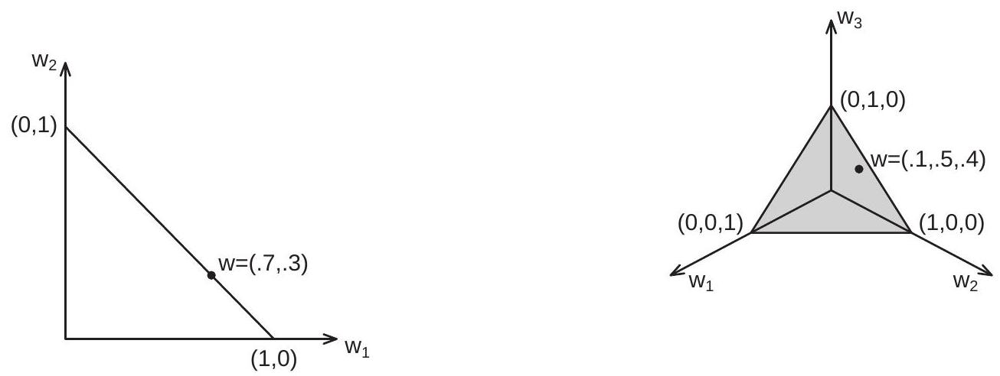

26 Model Selection, Stein Shrinkage, and Model Averaging
26.1 Introduction
The chapter reviews model selection, James-Stein shrinkage, and model averaging.
Model selection is a tool for selecting one model (or estimator) out of a set of models. Different model selection methods are distinguished by the criteria used to rank and compare models.
Model averaging is a generalization of model selection. Models and estimators are averaged using data-dependent weights.
James-Stein shrinkage modifies classical estimators by shrinking towards a reasonable target. Shrinking reduces mean squared error.
Two excellent monographs on model selection and averaging are Burnham and Anderson (1998) and Claeskens and Hjort (2008). James-Stein shrinkage theory is thoroughly covered in Lehmann and Casella (1998). See also Wasserman (2006) and Efron (2010).
26.2 Model Selection
In the course of an applied project an economist will routinely estimate multiple models. Indeed, most applied papers include tables displaying the results from different specifications. The question arises: Which model is best? Which should be used in practice? How can we select the best choice? This is the question of model selection.
Take, for example, a wage regression. Suppose we want a model which includes education, experience, region, and marital status. How should we proceed? Should we estimate a simple linear model plus a quadratic in experience? Should education enter linearly, a simple spline as in Figure 2.6(a), or with separate dummies for each education level? Should marital status enter as a simple dummy (married or not) or allowing for all recorded categories? Should interactions be included? Which? How many? Taken together we need to select the specific regressors to include in the regression model.
Model “selection” may be mis-named. It would be more appropriate to call the issue “estimator selection”. When we examine a table containing the results from multiple regressions we are comparing multiple estimates of the same regression. One estimator may include fewer variables than another; that is a restricted estimator. One may be estimated by least squares and another by 2SLS. Another could be nonparametric. The underlying model is the same; the difference is the estimator. Regardless, the literature has adopted the term “model selection” and we will adhere to this convention. To gain some basic understanding it may be helpful to start with a stylzed example. Suppose that we have a \(K \times 1\) estimator \(\widehat{\theta}\) which has expectation \(\theta\) and known covariance matrix \(\boldsymbol{V}\). An alternative feasible estimator is \(\widetilde{\theta}=0\). The latter may seem like a silly estimator but it captures the feature that model selection typically concerns exclusion restrictions. In this context we can compare the accuracy of the two estimators by their weighted mean-squared error (WMSE). For a given weight matrix \(\boldsymbol{W}\) define
\[ \text { wmse }[\widehat{\theta}]=\operatorname{tr}\left(\mathbb{E}\left[(\widehat{\theta}-\theta)(\widehat{\theta}-\theta)^{\prime}\right] \boldsymbol{W}\right)=\mathbb{E}\left[(\widehat{\theta}-\theta)^{\prime} \boldsymbol{W}(\widehat{\theta}-\theta)\right] \text {. } \]
The calculations simplify by setting \(\boldsymbol{W}=\boldsymbol{V}^{-1}\) which we do for our remaining calculations.
For our two estimators we calculate that
\[ \begin{aligned} \text { wmse }[\hat{\theta}] &=K \\ \text { wmse }[\widetilde{\theta}] &=\theta^{\prime} \boldsymbol{V}^{-1} \theta \stackrel{\text { def }}{=} \lambda . \end{aligned} \]
(See Exercise 28.1) The WMSE of \(\widehat{\theta}\) is smaller if \(K<\lambda\) and the WMSE of \(\widetilde{\theta}\) is smaller if \(K>\lambda\). One insight from this simple analysis is that we should prefer smaller (simpler) models when potentially omitted variables have small coefficients relative to estimation variance, and should prefer larger (more complicated) models when these variables have large coefficients relative to estimation variance. Another insight is that this choice is infeasible because \(\lambda\) is unknown.
The comparison between (28.1) and (28.2) is a basic bias-variance trade-off. The estimator \(\widehat{\theta}\) is unbiased but has a variance contribution of \(K\). The estimator \(\widetilde{\theta}\) has zero variance but has a squared bias contribution \(\lambda\). The WMSE combines these two components.
Selection based on WMSE suggests that we should ideally select the estimator \(\widehat{\theta}\) if \(K<\lambda\) and select \(\tilde{\theta}\) if \(K>\lambda\). A feasible implementation replaces \(\lambda\) with an estimator. A plug-in estimator is \(\hat{\lambda}=\widehat{\theta}^{\prime} \boldsymbol{V}^{-1} \widehat{\theta}=W\), the Wald statistic for the test of \(\theta=0\). However, the estimator \(\widehat{\lambda}\) has expectation
\[ \mathbb{E}[\widehat{\lambda}]=\mathbb{E}\left[\widehat{\theta}^{\prime} \boldsymbol{V}^{-1} \hat{\theta}\right]=\theta^{\prime} \boldsymbol{V}^{-1 \prime} \theta+\mathbb{E}\left[(\widehat{\theta}-\theta)^{\prime} \boldsymbol{V}^{-1}(\widehat{\theta}-\theta)\right]=\lambda+K \]
so is biased. An unbiased estimator is \(\tilde{\lambda}=\widehat{\lambda}-K\). Notice that \(\tilde{\lambda}>K\) is the same as \(W>2 K\). This leads to the model-selection rule: Use \(\widehat{\theta}\) if \(W>2 K\) and use \(\widetilde{\theta}\) otherwise.
This is an overly-simplistic setting but highlights the fundamental ingredients of criterion-based model selection. Comparing the MSE of different estimators typically involves a trade-off between the bias and variance with more complicated models exhibiting less bias but increased estimation variance. The actual trade-off is unknown because the bias depends on the unknown true parameters. The bias, however, can be estimated, giving rise to empirical estimates of the MSE and empirical model selection rules.
A large number of model selection criteria have been proposed. We list here those most frequently used in applied econometrics.
We first list selection criteria for the linear regression model \(Y=X^{\prime} \beta+e\) with \(\sigma^{2}=\mathbb{E}\left[e^{2}\right]\) and a \(k \times 1\) coefficient vector \(\beta\). Let \(\widehat{\beta}\) be the least squares estimator, \(\widehat{e}_{i}\) the least squares residual, and \(\widehat{\sigma}^{2}=n^{-1} \sum_{i=1}^{n} \widehat{e}_{i}^{2}\) the variance estimator. The number of estimated parameters \(\left(\beta\right.\) and \(\left.\sigma^{2}\right)\) is \(K=k+1\).
26.3 Bayesian Information Criterion
\[ \mathrm{BIC}=n+n \log \left(2 \pi \widehat{\sigma}^{2}\right)+K \log (n) . \]
26.4 Akaike Information Criterion
\[ \mathrm{AIC}=n+n \log \left(2 \pi \widehat{\sigma}^{2}\right)+2 K . \]
26.5 Cross-Validation
\[ \mathrm{CV}=\sum_{i=1}^{n} \widetilde{e}_{i}^{2} \]
where \(\widetilde{e}_{i}\) are the least squares leave-one-out prediction errors.
We next list two commonly-used selection criteria for likelihood-based estimation. Let \(f(y, \theta)\) be a parametric density with a \(K \times 1\) parameter \(\theta\). The likelihood \(L_{n}(\theta)=\prod_{i=1}^{n} f\left(Y_{i}, \theta\right)\) is the density evaluated at the observations. The maximum likelihood estimator \(\widehat{\theta} \operatorname{maximizes} \ell_{n}(\theta)=\log L_{n}(\theta)\).
26.6 Bayesian Information Criterion
\[ \mathrm{BIC}=-2 \ell_{n}(\widehat{\theta})+K \log (n) . \]
26.7 Akaike Information Criterion
\[ \mathrm{AIC}=-2 \ell_{n}(\widehat{\theta})+2 K . \]
In the following sections we derive and discuss these and other model selection criteria.
26.8 Bayesian Information Criterion
The Bayesian Information Criterion (BIC), also known as the Schwarz Criterion, was introduced by Schwarz (1978). It is appropriate for parametric models estimated by maximum likelihood and is used to select the model with the highest approximate probability of being the true model.
Let \(\pi(\theta)\) be the prior density for \(\theta\). The joint density of \(Y\) and \(\theta\) is \(f(y, \theta) \pi(\theta)\). The marginal density of \(Y\) is
\[ p(y)=\int f(y, \theta) \pi(\theta) d \theta \]
The marginal density \(p(Y)\) evaluated at the observations is known as the marginal likelihood.
Schwarz (1978) established the following approximation.
Theorem 28.1 Schwarz. If the model \(f(y, \theta)\) satisfies standard regularity conditions and the prior \(\pi(\theta)\) is diffuse then
\[ -2 \log p(Y)=-2 \ell_{n}(\widehat{\theta})+K \log (n)+O(1) \]
where the \(O(1)\) term is bounded as \(n \rightarrow \infty\).
A heuristic proof for normal linear regression is given in Section 28.32. A “diffuse” prior is one which distributes weight uniformly over the parameter space.
Schwarz’s theorem shows that the marginal likelihood approximately equals the maximized likelihood multiplied by an adjustment depending on the number of estimated parameters and the sample size. The approximation (28.6) is commonly called the Bayesian Information Criterion or BIC. The BIC is a penalized \(\log\) likelihood. The term \(K \log (n)\) can be interpreted as an over-parameterization penalty. The multiplication of the log likelihood by \(-2\) is traditional as it puts the criterion into the same units as a log-likelihood statistic. In the context of normal linear regression we have calculated in (5.6) that
\[ \ell_{n}(\widehat{\theta})=-\frac{n}{2}(\log (2 \pi)+1)-\frac{n}{2} \log \left(\widehat{\sigma}^{2}\right) \]
where \(\widehat{\sigma}^{2}\) is the residual variance estimate. Hence BIC equals (28.3) with \(K=k+1\).
Since \(n \log (2 \pi)+n\) does not vary across models this term is often omitted. It is better, however, to define the BIC as described above so that different parametric families are comparable. It is also useful to know that some authors define the BIC by dividing the above expression by \(n\) (e.g. \(\mathrm{BIC}=\log \left(2 \pi \widehat{\sigma}^{2}\right)+\) \(K \log (n) / n)\) which does not change the rankings between models. However, this is an unwise choice because it alters the scaling, making it difficult to compare the degree of difference between models.
Now suppose that we have two models \(\mathscr{M}_{1}\) and \(\mathscr{M}_{2}\) which have marginal likelihoods \(p_{1}(Y)\) and \(p_{2}(Y)\). Assume that both models have equal prior probability. Bayes Theorem states that the probability that a model is true given the data is proportional to its marginal likelihood. Specifically
\[ \begin{aligned} &\mathbb{P}\left[\mathscr{M}_{1} \mid Y\right]=\frac{p_{1}(Y)}{p_{1}(Y)+p_{2}(Y)} \\ &\mathbb{P}\left[\mathscr{M}_{2} \mid Y\right]=\frac{p_{2}(Y)}{p_{1}(Y)+p_{2}(Y)} . \end{aligned} \]
Bayes selection picks the model with highest probability. Thus if \(p_{1}(Y)>p_{2}(Y)\) we select \(\mathscr{M}_{1}\). If \(p_{1}(Y)<p_{2}(Y)\) we select \(\mathscr{M}_{2}\).
Finding the model with highest marginal likelihood is the same as finding the model with lowest value of \(-2 \log p(Y)\). Theorem \(28.1\) shows that the latter approximately equals the BIC. BIC selection picks the model with the lowest \({ }^{1}\) value of BIC. Thus BIC selection is approximate Bayes selection.
The above discussion concerned two models but applies to any number of models. BIC selection picks the model with the smallest BIC. For implementation you simply estimate each model, calculate its BIC, and compare. model.
The BIC may be obtained in Stata by using the command estimates stats after an estimated
26.9 Akaike Information Criterion for Regression
The Akaike Information Criterion (AIC) was introduced by Akaike (1973). It is used to select the model whose estimated density is closest to the true density. It is designed for parametric models estimated by maximum likelihood.
Let \(\widehat{f}(y)\) be an estimator of the unknown true density \(g(y)\) of the observation vector \(Y=\left(Y_{1}, \ldots, Y_{n}\right)\). For example, the normal linear regression estimate of \(g(y)\) is \(\widehat{f}(y)=\prod_{i=1}^{n} \phi_{\widehat{\sigma}}\left(Y_{i}-X_{i}^{\prime} \widehat{\beta}\right)\).
To measure the distance between the two densities \(g\) and \(\widehat{f}\) Akaike used the Kullback-Leibler information criterion (KLIC)
\[ \operatorname{KLIC}(g, f)=\int g(y) \log \left(\frac{g(y)}{f(y)}\right) d y . \]
Notice that \(\operatorname{KLIC}(g, f)=0\) when \(f(y)=g(y)\). By Jensen’s inequality,
\[ \operatorname{KLIC}(g, f)=-\int g(y) \log \left(\frac{f(y)}{g(y)}\right) d y \geq-\log \int f(y) d y=0 . \]
Thus \(\operatorname{KLIC}(g, f)\) is a non-negative measure of the deviation of \(f\) from \(g\), with small values indicating a smaller deviation.
\({ }^{1}\) When the BIC is negative this means taking the most negative value. The KLIC distance between the true and estimated densities is
\[ \begin{aligned} \operatorname{KLIC}(g, \widehat{f}) &=\int g(y) \log \left(\frac{g(y)}{\widehat{f}(y)}\right) d y \\ &=\int g(y) \log (g(y)) d y-\int g(y) \log (\widehat{f}(y)) d y . \end{aligned} \]
This is random as it depends on the estimator \(\widehat{f}\). Akaike proposed the expected KLIC distance
\[ \mathbb{E}[\operatorname{KLIC}(g, \widehat{f})]=\int g(y) \log (g(y)) d y-\mathbb{E}\left[\int g(y) \log (\widehat{f}(y)) d y\right] . \]
The first term in (28.8) does not depend on the model. So minimization of expected KLIC distance is minimization of the second term. Multiplied by 2 (similarly to the BIC) this is
\[ T=-2 \mathbb{E}\left[\int g(y) \log (\widehat{f}(y)) d y\right] . \]
The expectation is over the random estimator \(\widehat{f}\).
An alternative interpretation is to notice that the integral in (28.9) is an expectation over \(Y\) with respect to the true data density \(g(y)\). Thus we can write (28.9) as
\[ T=-2 \mathbb{E}[\log (\widehat{f}(\widetilde{Y}))] \]
where \(\tilde{Y}\) is an independent copy of \(Y\). The key to understand this expression is that both the estimator \(\widehat{f}\) and the evaluation points \(\widetilde{Y}\) are random and independent. \(T\) is the expected log-likelihood fit using the estimated model \(\widehat{f}\) of an out-of-sample realization \(\widetilde{Y}\). Thus \(T\) can be interpreted as an expected predictive log likelihood. Models with low values of \(T\) have good fit based on the out-of-sample loglikelihood.
To gain further understanding we consider the simple case of the normal linear regression model with \(K\) regressors. The log density of the model for the observations is
\[ \log f(Y, \boldsymbol{X}, \theta)=-\frac{n}{2} \log \left(2 \pi \sigma^{2}\right)-\frac{1}{2 \sigma^{2}} \sum_{i=1}^{n}\left(Y_{i}-X_{i}^{\prime} \beta\right)^{2} . \]
The expected value at the true parameter values is \(-\frac{n}{2} \log \left(2 \pi \sigma^{2}\right)-\frac{n}{2}\). This means that the idealized value of \(T\) is \(T_{0}=n \log \left(2 \pi \sigma^{2}\right)+n\). This would be the value obtained if there were no estimation error.
To simplify the calculations, we add the assumption that the variance \(\sigma^{2}\) is known.
Theorem 28.2 Suppose \(\widehat{f}(y)\) is an estimated normal linear regression model with \(K\) regressors and a known variance \(\sigma^{2}\). Suppose that the true density \(g(y)\) is a conditionally homoskedastic regression with variance \(\sigma^{2}\). Then
\[ \begin{aligned} T &=n \log \left(2 \pi \sigma^{2}\right)+n+K=T_{0}+K \\ \mathbb{E}\left[-2 \ell_{n}(\widehat{\theta})\right] &=n \log \left(2 \pi \sigma^{2}\right)+n-K=T_{0}-K . \end{aligned} \]
The proof is given in Section \(28.32\). These expressions are interesting. Expression (28.12) shows that the expected KLIC distance \(T\) equals the idealized value \(T_{0}\) plus \(K\). The latter is the cost of parameter estimation, measured in terms of expected KLIC distance. By estimating parameters (rather than using the true values) the expected KLIC distance increases by \(K\).
Expression (28.13) shows the converse story. It shows that the sample log-likelihood function is smaller than the idealized value \(T_{0}\) by \(K\). This is the cost of in-sample over-fitting. The sample loglikelihood is an in-sample measure of fit and therefore understates the population log-likelihood. The two expressions together show that the expected sample log-likelihood is smaller than the target value \(T\) by \(2 K\). This is the combined cost of over-fitting and parameter estimation.
Combining these expressions we can suggest an unbiased estimator for \(T\). In the normal regression model we use (28.4). Since \(n \log (2 \pi)+n\) does not vary across models it are often omitted. Thus for linear regression it is common to use the definition \(\mathrm{AIC}=n \log \left(\widehat{\sigma}^{2}\right)+2 K\).
Interestingly the AIC takes a similar form to the BIC. Both the AIC and BIC are penalized log likelihoods, and both penalties are proportional to the number of estimated parameters \(K\). The difference is that the AIC penalty is \(2 K\) while the BIC penalty is \(K \log (n)\). Since \(2<\log (n)\) if \(n \geq 8\) the BIC uses a stronger parameterization penalty.
Selecting a model by the AIC is equivalent to calculating the AIC for each model and selecting the model with the lowest \({ }^{2}\) value.
Theorem 28.3 Under the assumptions of Theorem 28.2, \(\mathbb{E}[\mathrm{AIC}]=T\). AIC is thus an unbiased estimator of \(T\).
One of the interesting features of these results are that they are exact - there is no approximation and they do not require that the true error is normally distributed. The critical assumption is conditional homoskedasticity. If homoskedasticity fails then the AIC loses its validity.
The AIC may be obtained in Stata by using the command estimates stats after an estimated model.
26.10 Akaike Information Criterion for Likelihood
For the general likelihood context Akaike proposed the criterion (28.7). Here, \(\widehat{\theta}\) is the maximum likelihood estimator, \(\ell_{n}(\widehat{\theta})\) is the maximized log-likelihood function, and \(K\) is the number of estimated parameters. This specializes to (28.4) for the case of a normal linear regression model.
As for regression, AIC selection is performed by estimating a set of models, calculating AIC for each, and selecting the model with the smallest AIC.
The advantages of the AIC are that it is simple to calculate, easy to implement, and straightforward to interpret. It is intuitive as it is a simple penalized likelihood.
The disadvantage is that its simplicity may be deceptive. The proof shows that the criterion is based on a quadratic approximation to the log likelihood and an asymptotic chi-square approximation to the classical Wald statistic. When these conditions fail then the AIC may not be accurate. For example, if the model is an approximate (quasi) likelihood rather than a true likelihood then the failure of the information matrix equality implies that the classical Wald statistic is not asymptotically chi-square. In this case the accuracy of AIC fails. Another problem is that many nonlinear models have parameter regions where parametric identification fails. In these models the quadratic approximation to the log
\({ }^{2}\) When the AIC is negative this means taking the most negative value. likelihood function fails to hold uniformly in the parameter space so the accuracy of the AIC fails. These qualifications point to challenges in interpretation of the AIC in nonlinear models.
The following is an analog of Theorem 28.3.
Theorem 28.4 Under standard regularity conditions for maximum likelihood estimation, plus the assumption that certain statistics (identified in the proof) are uniformly integrable, \(\mathbb{E}[\mathrm{AIC}]=T+O\left(n^{1 / 2}\right)\). AIC is thus an approximately unbiased estimator of \(T\)
A sketch of the proof is given in Section \(28.32\).
This result shows that the AIC is, in general, a reasonable estimator of the KLIC fit of an estimated parametric model. The theorem holds broadly for maximum likelihood estimation and thus the AIC can be used in a wide variety of contexts.
26.11 Mallows Criterion
The Mallows Criterion was proposed by Mallows (1973) and is often called the \(C_{p}\) criterion. It is appropriate for linear estimators of homoskedastic regression models.
Take the homoskedastic regression framework
\[ \begin{aligned} Y &=m+e \\ m &=m(X) \\ \mathbb{E}[e \mid X] &=0 \\ \mathbb{E}\left[e^{2} \mid X\right] &=\sigma^{2} . \end{aligned} \]
Write the first equation in vector notation for the \(n\) observations as \(\boldsymbol{Y}=\boldsymbol{m}+\boldsymbol{e}\). Let \(\widehat{\boldsymbol{m}}=\boldsymbol{A} \boldsymbol{Y}\) be a linear estimator of \(\boldsymbol{m}\), meaning that \(\boldsymbol{A}\) is some \(n \times n\) function of the regressor matrix \(\boldsymbol{X}\) only. The residuals are \(\widehat{\boldsymbol{e}}=\boldsymbol{Y}-\widehat{\boldsymbol{m}}\). The class of linear estimators includes least squares, weighted least squares, kernel regression, local linear regression, and series regression. For example, the least squares estimator using a regressor matrix \(\boldsymbol{Z}\) is the case \(\boldsymbol{A}=\boldsymbol{Z}\left(\boldsymbol{Z}^{\prime} \boldsymbol{Z}\right)^{-1} \boldsymbol{Z}^{\prime}\).
Mallows (1973) proposed the criterion
\[ C_{p}=\widehat{\boldsymbol{e}}^{\prime} \widehat{\boldsymbol{e}}+2 \widetilde{\sigma}^{2} \operatorname{tr}(\boldsymbol{A}) \]
where \(\widetilde{\sigma}^{2}\) is a preliminary estimator of \(\sigma^{2}\) (typically based on fitting a large model). In the case of least squares regression with \(K\) coefficients this simplifies to
\[ C_{p}=n \widehat{\sigma}^{2}+2 K \widetilde{\sigma}^{2} . \]
The Mallows crierion can be used similarly to the AIC. A set of regression models are estimated and the criterion \(C_{p}\) calculated for each. The model with the smallest value of \(C_{p}\) is the Mallows-selected model.
Mallows designed the criterion \(C_{p}\) as an unbiased estimator of the following measure of fit
\[ R=\mathbb{E}\left[\sum_{i=1}^{n}\left(\widehat{m}_{i}-m_{i}\right)^{2}\right] . \]
This is the expected squared difference between the estimated and true regressions evaluated at the observations.
An alternative motivation for \(R\) is in terms of prediction accuracy. Consider an independent set of observations \(\widetilde{Y}_{i}, i=1, \ldots, n\), which have the same regressors \(X_{i}\) as those in sample. Consider prediction of \(\widetilde{Y}_{i}\) given \(X_{i}\) and the fitted regression. The least squares predictor is \(\widehat{m}_{i}\). The sum of expected squared prediction errors is
\[ \text { MSFE }=\sum_{i=1}^{n} \mathbb{E}\left[\left(\widetilde{Y}_{i}-\widehat{m}_{i}\right)^{2}\right] . \]
The best possible (infeasible) value of this quantity is
\[ \operatorname{MSFE}_{0}=\sum_{i=1}^{n} \mathbb{E}\left[\left(\widetilde{Y}_{i}-m_{i}\right)^{2}\right] . \]
The difference is the prediction accuracy of the estimator:
\[ \begin{aligned} \operatorname{MSFE}^{-\operatorname{MSFE}_{0}} &=\sum_{i=1}^{n} \mathbb{E}\left[\left(\widetilde{Y}_{i}-\widehat{m}_{i}\right)^{2}\right]-\sum_{i=1}^{n} \mathbb{E}\left[\left(\widetilde{Y}_{i}-m_{i}\right)^{2}\right] \\ &=\mathbb{E}\left[\sum_{i=1}^{n}\left(\widehat{m}_{i}-m_{i}\right)^{2}\right] \\ &=R \end{aligned} \]
which equals Mallows’ measure of fit. Thus \(R\) is a measure of prediction accuracy.
We stated that the Mallows criterion is an unbiased estimator of \(R\). More accurately, the adjusted criterion \(C_{p}^{*}=C_{p}-\boldsymbol{e}^{\prime} \boldsymbol{e}\) is unbiased for \(R\). When comparing models \(C_{p}\) and \(C_{p}^{*}\) are equivalent so this substitution has no consequence for model selection.
Theorem 28.5 If \(\widehat{\boldsymbol{m}}=\boldsymbol{A} \boldsymbol{Y}\) is a linear estimator, the regression error is conditionally mean zero and homoskedastic, and \(\widetilde{\sigma}^{2}\) is unbiased for \(\sigma^{2}\), then
\[ \mathbb{E}\left[C_{p}^{*}\right]=R \]
so the adjusted Mallows criterion \(C_{p}^{*}\) is an unbiased estimator of \(R\).
The proof is given in Section 28.32.
26.12 Hold-Out Criterion
Dividing the sample into two parts, one for estimation and the second for evaluation, creates a simple device for model evaluation and selection. This procedure is often labelled hold-out evaluation. In the recent machine learning literature the data division is typically described as a training sample and a test sample.
The sample is typically divided randomly so that the estimation (training) sample has \(N\) observations and the evaluation (test) sample has \(P\) observations, where \(N+P=n\). There is no universal rule for the choice of \(N \& P\), but \(N=P=n / 2\) is a standard choice. For more complicated procedures, such as the evaluation of model selection methods, it is desirable to make a tripartite division of the sample into (1) training, (2) model selection, and (3) final estimation and assessment. This can be particularly useful when it is desired to obtain a parameter estimator whose distribution is not distorted by the model selection process. Such divisions are most suited for a context of an extremely large sample.
Take the standard case of a bipartite division where \(1 \leq i \leq N\) is the estimation sample and \(N+1 \leq\) \(i \leq N+P\) is the evaluation sample. On the estimation sample we construct the parameter estimates, for example the least squares coefficients
\[ \widetilde{\beta}_{N}=\left(\sum_{i=1}^{N} X_{i} X_{i}^{\prime}\right)^{-1}\left(\sum_{i=1}^{N} X_{i} Y_{i}\right) \]
Combining this coefficient with the evaluation sample we calculate the prediction errors \(\widetilde{e}_{N, i}=Y_{i}-X_{i}^{\prime} \widetilde{\beta}_{N}\) for \(i \geq N+1\).
In Section \(4.12\) we defined the mean squared forecast error (MSFE) based on a estimation sample of size \(N\) as the expectation of the squared out-of-sample prediction error \(\operatorname{MSFE}_{N}=\mathbb{E}\left[\widetilde{e}_{N, i}^{2}\right]\). The hold-out estimator of the MSFE is the average of the squared prediction errors
\[ \widetilde{\sigma}_{N, P}^{2}=\frac{1}{P} \sum_{i=N+1}^{N+P} \widetilde{e}_{N, i}^{2} . \]
We can see that \(\widetilde{\sigma}_{N, P}^{2}\) is unbiased for \(\mathrm{MSFE}_{N}\).
When \(N=P\) we can improve estimation of the MSFE by flipping the procedure. Exchanging the roles of estimation and evaluation samples we obtain a second MSFE estimator, say \(\widetilde{\omega}_{N, P}^{2}\). The global estimator is their average \(\widetilde{\sigma}_{N, P}^{* 2}=\left(\widetilde{\sigma}_{N, P}^{2}+\widetilde{\omega}_{N, P}^{2}\right) / 2\). This estimator also has expectation MSFE \({ }_{N}\) but has reduced variance.
The estimated MSFE \(\widetilde{\sigma}_{N, P}^{* 2}\) can be used for model selection. The quantity \(\widetilde{\sigma}_{N, P}^{* 2}\) is calculated for a set of proposed models. The selected model is the one with the smallest value of \(\widetilde{\sigma}_{N, P}^{* 2}\). The method is intuitive, general, and flexible, and does not rely on technical assumptions.
The hold-out method has two disadvantages. First, if our goal is estimation using the full sample, our desired estimate is \(\mathrm{MSFE}_{n}\), not \(\operatorname{MSFE}_{N}\). Hold-out estimation provides an estimator of the MSFE based on estimation using a substantially reduced sample size, and is thus biased for the MSFE based on estimation using the full sample. Second, the estimator \(\widetilde{\sigma}_{N, P}^{* 2}\) is sensitive to the random sorting of the observations into the estimation and evaluation samples. This affects model selection. Results can depend on the initial sample sorting and are therefore partially arbitrary.
26.13 Cross-Validation Criterion
In applied statistics and machine learning the default method for model selection and tuning parameter selection is cross-validation. We have introduced some of the concepts throughout the textbook, and review and unify the concepts at this point. Cross-validation is closely related to the hold-out criterion introduced in the previous section.
In Section \(3.20\) we defined the leave-one-out estimator as that obtained by applying an estimation formula to the sample omitting the \(i^{t h}\) observation. This is identical to the hold-out problem as described previously, where the estimation sample is \(N=n-1\) and the evaluation sample is \(P=1\). The estimator obtained omitting observation \(i\) is written as \(\widehat{\beta}_{(-i)}\). The prediction error is \(\widetilde{e}_{i}=Y_{i}-X_{i}^{\prime} \widehat{\beta}_{(-i)}\). The out-of-sample mean squared error “estimate” is \(\widetilde{e}_{i}^{2}\). This is repeated \(n\) times, once for each observation \(i\), and the MSFE estimate is the average of the \(n\) squared prediction errors
\[ \mathrm{CV}=\frac{1}{n} \sum_{i=1}^{n} \widetilde{e}_{i}^{2} . \]
The estimator CV is called the cross-validation (CV) criterion. It is a natural generalization of the hold-out criterion and eliminates the two disadvantages described in the previous section. First, the CV criterion is an unbiased estimator of MSFE \({ }_{n-1}\), which is essentially the same as MSFE . Thus CV \(_{n}\). is essentially unbiased for model selection. Second, the CV criterion does not depend on a random sorting of the observations. As there is no random component the criterion takes the same value in any implementation.
In least squares estimation the CV criterion has a simple computational implementation. Theorem 3.7 shows that the leave-one-out least squares estimator (3.42) equals
\[ \widehat{\beta}_{(-i)}=\widehat{\beta}-\frac{1}{\left(1-h_{i i}\right)}\left(\boldsymbol{X}^{\prime} \boldsymbol{X}\right)^{-1} X_{i} \widehat{e}_{i} \]
where \(\widehat{e}_{i}\) are the least squares residuals and \(h_{i i}\) are the leverage values. The prediction error thus equals
\[ \widetilde{e}_{i}=Y_{i}-X_{i}^{\prime} \widehat{\beta}_{(-i)}=\left(1-h_{i i}\right)^{-1} \widehat{e}_{i} \]
where the second equality is from Theorem 3.7. Consequently the CV criterion is
\[ \mathrm{CV}=\frac{1}{n} \sum_{i=1}^{n} \widetilde{e}_{i}^{2}=\frac{1}{n} \sum_{i=1}^{n}\left(1-h_{i i}\right)^{-2} \widehat{e}_{i}^{2} . \]
Recall as well that in our study of nonparametric regression (Section 19.12) we defined the crossvalidation criterion for kernel regression as the weighted average of the squared prediction errors
\[ \mathrm{CV}=\frac{1}{n} \sum_{i=1}^{n} \tilde{e}_{i}^{2} w\left(X_{i}\right) . \]
Theorem \(19.7\) showed that \(\mathrm{CV}\) is approximately unbiased for the integrated mean squared error (IMSE), which is a standard measure of accuracy for nonparametric regression. These results show that CV is an unbiased estimator for both the MSFE and IMSE, showing a close connection between these measures of accuracy.
In Section \(20.17\) and equation (20.30) we defined the CV criterion for series regression as in (28.5). Selecting variables for series regression is identical to model selection. The results as described above show that the CV criterion is an estimator for the MSFE and IMSE of the regression model and is therefore a good candidate for assessing model accuracy. The validity of the CV criterion is much broader than the AIC as the theorems for CV do not require conditional homoskedasticity. This is not an artifact of the proof method; cross-validation is inherently more robust than AIC or BIC.
Implementation of CV model selection is the same as for the other criteria. A set of regression models are estimated. For each the CV criterion is calculated. The model with the smallest value of CV is the CVselected model.
The CV method is also much broader in concept and potential application. It applies to any estimation method so long as a “leave one out” error can be calculated. It can also be applied to other loss functions beyond squared error loss. For example, a cross-validation estimate of absolute loss is
\[ \mathrm{CV}=\frac{1}{n} \sum_{i=1}^{n}\left|\widetilde{e}_{i}\right| . \]
Computationally and conceptually it is straightforward to select models by minimizing such criterion. However, the properties of applying CV to general criterion is not known.
Stata does not have a standard command to calculate the CV criterion for regression models.
26.14 K-Fold Cross-Validation
There are two deficiencies with the CV criterion which can be alleviated by the closely related K-fold cross-validation criterion. The first deficiency is that CV calculation can be computationally costly when sample sizes are very large or the estimation method is other than least squares. For estimators other than least squares it may be necessary to calculate \(n\) separate estimations. This can be computationally prohibitive in some contexts. A second deficiency is that the CV criterion, viewed as an estimator of \(\operatorname{MSFE}_{n}\), has a high variance. The source is that the leave-one-out estimators \(\widehat{\beta}_{(-i)}\) have minimal variation across \(i\) and are therefore highly correlated.
An alternative is is to split the sample into \(K\) groups (or “folds”) and treat each group as a hold-out sample. This effectively reduces the number of estimations from \(n\) to \(K\). (This \(K\) is not the number of estimated coefficients. I apologize for the possible confusion in notation but this is the standard label.) A common choice is \(K=10\), leading to what is known as \(\mathbf{1 0}\)-fold cross-validation.
The method works by the following steps. This description is for estimation of a regression model \(Y=g(X, \theta)+e\) with estimator \(\widehat{\theta}\)
Randomly sort the observations.
Split the observations into folds \(k=1, \ldots, K\) of (roughly) equal size \(n_{k} \simeq n / K\). Let \(I_{k}\) denote the observations in fold \(k\)
For \(k=1, . ., K\)
Exclude fold \(I_{k}\) from the dataset. This produces a sample with \(n-n_{k}\) observations.
Calculate the estimator \(\widehat{\theta}_{(-k)}\) on this sample.
Calculate the prediction errors \(\widetilde{e}_{i}=Y_{i}-g\left(X_{i}, \widehat{\theta}_{(-k)}\right)\) for \(i \in I_{k}\).
Calculate \(\mathrm{CV}_{k}=n_{k}^{-1} \sum_{i \in I_{k}} \widetilde{e}_{i}^{2}\)
1. Calculate \(\mathrm{CV}=K^{-1} \sum_{k=1}^{K} \mathrm{CV}_{k}\).
If \(K=n\) the method is identical to leave-one-out cross validation.
A useful feature of \(K\)-fold CV is that we can calculate an approximate standard error. It is based on the approximation \(\operatorname{var}[\mathrm{CV}] \simeq K^{-1} \operatorname{var}\left[\mathrm{CV}_{k}\right]\) which is based on the idea that \(\mathrm{CV}_{k}\) are approximately uncorrelated acros folds. This leads to the standard error
\[ s(\mathrm{CV})=\sqrt{\frac{1}{K(K-1)} \sum_{k=1}^{K}\left(\mathrm{CV}_{k}-\mathrm{CV}\right)^{2}} . \]
This is similar to a clustered variance formula, where the folds are treated as clusters. The standard error \(s\) (CV) can be reported to assess the precision of CV as an estimate of the MSFE.
One disadvantage of K-fold cross-validation is that CV can be sensitive to the initial random sorting of the observations, leading to partially arbitrary results. This problem can be reduced by a technique called repeated CV, which repeats the K-fold CV algorithm \(M\) times (each time with a different random sorting), leading to \(M\) values of \(C\). These are averaged to produce the repeated CV value. As \(M\) increases, the randomness due to sorting is eliminated. An associated standard error can be obtained by taking the square root of the average squared standard errors.
CV model selection is typically implemented by selecting the model with the smallest value of CV. An alternative implementation is known as the one standard error (1se) rule and selects the most parsimonious model whose value of CV is within one standard error of the minimum CV. The (informal) idea is that models whose value of \(\mathrm{CV}\) is within one standard error of one another are not statistically distinguishable, and all else held equal we should lean towards parsimony. The 1se rule is the default in the popular cv.glmnet R function. The lse rule is an oversmoothing choice, meaning that it leans towards higher bias and reduced variance. In contrast, for inference many econometricians recommend undersmoothing bandwidths, which means selecting a less parsimonious model than the CV minimizing choice.
26.15 Many Selection Criteria are Similar
For the linear regression model many selection criteria have been introduced. However, many of these alternative criteria are quite similar to one another. In this section we review some of these connections. The following discussion is for the standard regression model \(Y=X^{\prime} \beta+e\) with \(n\) observations, \(K\) estimated coefficients, and least squares variance estimator \(\widehat{\sigma}_{K}^{2}\).
Shibata (1980) proposed the criteria
\[ \text { Shibata }=\widehat{\sigma}_{K}^{2}\left(1+\frac{2 K}{n}\right) \]
as an estimator of the MSFE. Recalling the Mallows criterion for regression (28.15) we see that Shibata = \(C_{p} / n\) if we replace the preliminary estimator \(\widetilde{\sigma}^{2}\) with \(\widehat{\sigma}_{K}^{2}\). Thus the two are quite similar in practice.
Taking logarithms and using the approximation \(\log (1+x) \simeq x\) for small \(x\)
\[ n \log (\text { Shibata })=n \log \left(\widehat{\sigma}_{K}^{2}\right)+n \log \left(1+\frac{2 K}{n}\right) \simeq n \log \left(\widehat{\sigma}_{K}^{2}\right)+2 K=\text { AIC. } \]
Thus minimization of Shibata’s criterion and AIC are similar.
Akaike (1969) proposed the Final Prediction Error Criteria
\[ \mathrm{FPE}=\widehat{\sigma}_{K}^{2}\left(\frac{1+K / n}{1-K / n}\right) . \]
Using the expansions \((1-x)^{-1} \simeq 1+x\) and \((1+x)^{2} \simeq 1+2 x\) we see that \(\mathrm{FPE} \simeq\) Shibata.
Craven and Wahba (1979) proposed Generalized Cross Validation
\[ \mathrm{GCV}=\frac{n \widehat{\sigma}_{K}^{2}}{(n-K)^{2}} . \]
By the expansion \((1-x)^{-2} \simeq 1+2 x\) we find that
\[ n \mathrm{GCV}=\frac{\widehat{\sigma}_{K}^{2}}{(1-K / n)^{2}} \simeq \widehat{\sigma}_{K}^{2}\left(1+\frac{2 K}{n}\right)=\text { Shibata. } \]
The above calculations show that the WMSE, AIC, Shibata, FPE, GCV, and Mallows criterion are all close approximations to one another when \(K / n\) is small. Differences arise in finite samples for large \(K\). However, the above analysis shows that there is no fundamental difference between these criteria. They are all estimating the same target. This is in contrast to BIC which uses a different parameterization penalty and is asymptotically distinct. Interestingly there also is a connection between \(\mathrm{CV}\) and the above criteria. Again using the expansion \((1-x)^{-2} \simeq 1+2 x\) we find that
\[ \begin{aligned} \mathrm{CV} &=\sum_{i=1}^{n}\left(1-h_{i i}\right)^{-2} \widehat{e}_{i}^{2} \\ & \simeq \sum_{i=1}^{n} \widehat{e}_{i}^{2}+\sum_{i=1}^{n} 2 h_{i i} \widehat{e}_{i}^{2} \\ &=n \widehat{\sigma}_{K}^{2}+2 \sum_{i=1}^{n} X_{i}^{\prime}\left(\boldsymbol{X}^{\prime} \boldsymbol{X}\right)^{-1} X_{i} \widehat{e}_{i}^{2} \\ &=n \widehat{\sigma}_{K}^{2}+2 \operatorname{tr}\left(\left(\boldsymbol{X}^{\prime} \boldsymbol{X}\right)^{-1}\left(\sum_{i=1}^{n} X_{i} X_{i}^{\prime} \widehat{e}_{i}^{2}\right)\right) \\ & \simeq n \widehat{\sigma}_{K}^{2}+2 \operatorname{tr}\left(\left(\mathbb{E}\left[X X^{\prime}\right]\right)^{-1}\left(\mathbb{E}\left[X X^{\prime} e^{2}\right]\right)\right) \\ &=n \widehat{\sigma}_{K}^{2}+2 K \sigma^{2} \\ & \simeq S h i b a t a . \end{aligned} \]
The third-to-last line holds asymptotically by the WLLN. The following equality holds under conditional homoskedasiticity. The final approximation replaces \(\sigma^{2}\) by the estimator \(\widehat{\sigma}_{K}^{2}\). This calculation shows that under the assumption of conditional homoskedasticity the CV criterion is similar to the other criteria. It differs under heteroskedasticity, however, which is one of its primary advantages.
26.16 Relation with Likelihood Ratio Testing
Since the AIC and BIC are penalized log-likelihoods, AIC and BIC selection are related to likelihood ratio testing. Suppose we have two nested models \(\mathscr{M}_{1}\) and \(\mathscr{M}_{2}\) with log-likelihoods \(\ell_{1 n}\left(\widehat{\theta}_{1}\right)\) and \(\ell_{2 n}\left(\widehat{\theta}_{2}\right)\) and \(K_{1}<K_{2}\) estimated parameters. AIC selects \(\mathscr{M}_{1}\) if \(\operatorname{AIC}\left(K_{1}\right)<\operatorname{AIC}\left(K_{2}\right)\) which occurs when
\[ \left.-2 \ell_{1 n}\left(\widehat{\theta}_{1}\right)+2 K_{1}<-2 \ell_{2 n}\left(\widehat{\theta}_{2}\right)\right)+2 K_{2} \]
or
\[ \mathrm{LR}=2\left(\ell_{2 n}\left(\widehat{\theta}_{2}\right)-\ell_{1 n}\left(\widehat{\theta}_{1}\right)\right)<2 r \]
where \(r=K_{2}-K_{1}\). Thus AIC selection is similar to selection by likelihood ratio testing with a different critical value. Rather than using a critical value from the chi-square distribution the “critical value” is \(2 r\). This is not to say that AIC selection is testing (it is not). But rather that there is a similar structure in the decision.
There are two useful practical implications. One is that when test statistics are reported in their \(F\) form (which divide by the difference in coefficients \(r\) ) then the AIC “critical value” is 2 . The AIC selects the restricted (smaller) model if \(F<2\). It selects the unrestricted (larger) model if \(F>2\).
Another useful implication is in the case of considering a single coefficient (when \(r=1\) ). AIC selects the coefficient (the larger model) if \(\mathrm{LR}>2\). In contrast a \(5 %\) significance test “selects” the larger model (rejects the smaller) if LR \(>3.84\). Thus AIC is more generous in terms of selecting larger models. An equivalent way of seeing this is that AIC selects the coefficient if the t-ratio exceeds \(1.41\) while the \(5 %\) significance test selects if the t-ratio exceeds \(1.96\).
Similar comments apply to BIC selection though the effective critical values are different. For comparing models with coefficients \(K_{1}<K_{2}\) the BIC selects \(\mathscr{M}_{1}\) if \(\mathrm{LR}<\log (n) r\). The “critical value” for an \(F\) statistic is \(\log (n)\). Hence BIC selection becomes stricter as sample sizes increase.
26.17 Consistent Selection
An important property of a model selection procedure is whether it selects a true model in large samples. We call such a procedure consistent.
To discuss this further we need to thoughtfully define what is a “true” model. The answer depends on the type of model.
When a model is a parametric density or distribution \(f(y, \theta)\) with \(\theta \in \Theta\) (as in likelihood estimation) then the model is true if there is some \(\theta_{0} \in \Theta\) such that \(f\left(y, \theta_{0}\right)\) equals the true density or distribution. Notice that it is important in this context both that the function class \(f(y, \theta)\) and parameter space \(\Theta\) are appropriately defined.
In a semiparametric conditional moment condition model which states \(\mathbb{E}[g(Y, X, \theta) \mid X]=0\) with \(\theta \in \Theta\) then the model is true if there is some \(\theta_{0} \in \Theta\) such that \(\mathbb{E}\left[g\left(Y, X, \theta_{0}\right) \mid X\right]=0\). This includes the regression model \(Y=m(X, \theta)+e\) with \(\mathbb{E}[e \mid X]=0\) where the model is true if there is some \(\theta_{0} \in \Theta\) such that \(m\left(X, \theta_{0}\right)=\mathbb{E}[Y \mid X]\). It also includes the homoskedastic regression model which adds the requirement that \(\mathbb{E}\left[e^{2} \mid X\right]=\sigma^{2}\) is a constant.
In a semiparametric unconditional moment condition model \(\mathbb{E}[g(Y, X, \theta)]=0\) then the model is true if there is some \(\theta_{0} \in \Theta\) such that \(\mathbb{E}\left[g\left(Y, X, \theta_{0}\right)\right]=0\). A subtle issue here is that when the model is just identified and \(\Theta\) is unrestricted then this condition typically holds and so the model is typically true. This includes least squares regression interpreted as a projection and just-identified instrumental variables regression.
In a nonparametric model such as \(Y \sim f \in \mathscr{F}\) where \(\mathscr{F}\) is some function class (such as second-order differentiable densities) then the model is true if the true density is a member of the function class \(\mathscr{F}\).
A complication arises that there may be multiple true models. This cannot occur when models are strictly non-nested (meaning that there is no common element in both model classes) but strictly nonnested models are rare. Most models have non-trivial intersections. For example, the linear regression models \(Y=\alpha+X_{1}^{\prime} \beta_{1}+e\) and \(Y=\alpha+X_{2}^{\prime} \beta_{2}+e\) with \(X_{1}\) and \(X_{2}\) containing no common elements may appear non-nested but they intersect when \(\beta_{1}=0\) and \(\beta_{2}=0\). As another example consider the linear model \(Y=\alpha+X^{\prime} \beta+e\) and \(\log\)-linear model \(\log (Y)=\alpha+X^{\prime} \beta+e\). If we add the assumption that \(e \sim \mathrm{N}\left(0, \sigma^{2}\right)\) then the models are non-intersecting. But if we relax normality and instead use the conditional mean assumption \(\mathbb{E}[e \mid X]=0\) then the models are intersecting when \(\beta_{1}=0\) and \(\beta_{2}=0\).
The most common type of intersecting models are nested. In regression this occurs when the two models are \(Y=X_{1}^{\prime} \beta_{1}+e\) and \(Y=X_{1}^{\prime} \beta_{1}+X_{2}^{\prime} \beta_{2}+e\). If \(\beta_{2} \neq 0\) then only the second model is true. But if \(\beta_{2}=0\) then both are true models.
In general, given a set of models \(\overline{\mathscr{M}}=\left\{\mathscr{M}_{1}, \ldots, \mathscr{M}_{M}\right\}\) a subset \(\overline{\mathscr{M}}^{*}\) are true models (as described above) while the remainder are not true models.
A model selection rule \(\widehat{M}\) selects one model from the set \(\bar{M}\). We say a method is consistent if it asymptotically selects a true model.
Definition 28.1 A model selection rule is model selection consistent if \(\mathbb{P}\left[\widehat{M} \in \bar{M}^{*}\right] \rightarrow 1\) as \(n \rightarrow \infty\)
This states that the model selection rule selects a true model with probability tending to 1 as the sample size diverges.
A broad class of model selection methods satisfy this definition of consistency. To see this consider the class of information criteria
\[ \mathrm{IC}=-2 \ell_{n}(\widehat{\theta})+c(n, K) . \]
This includes AIC \((c=2 K), \mathrm{BIC}(c=K \log (n))\), and testing-based selection ( \(c\) equals a fixed quantile of the \(\chi_{K}^{2}\) distribution).
Theorem 28.6 Under standard regularity conditions for maximum likelihood estimation, selection based on IC is model selection consistent if \(c(n, K)=o(n)\) as \(n \rightarrow \infty\).
The proof is given in Section \(28.32\).
This result covers AIC, BIC and testing-based selection. Thus all are model selection consistent.
A major limitation with this result is that the definition of model selection consistency is weak. A model may be true but over-parameterized. To understand the distinction consider the models \(Y=\) \(X_{1}^{\prime} \beta_{1}+e\) and \(Y=X_{1}^{\prime} \beta_{1}+X_{2}^{\prime} \beta_{2}+e\). If \(\beta_{2}=0\) then both \(\mathscr{M}_{1}\) and \(\mathscr{M}_{2}\) are true, but \(\mathscr{M}_{1}\) is the preferred model as it is more parsimonious. When two nested models are both true models it is conventional to think of the more parsimonious model as the correct model. In this context we do not describe the larger model as an incorrect model but rather as over-parameterized. If a selection rule asymptotically selects an over-parameterized model we say that it “over-selects”.
Definition 28.2 A model selection rule asymptotically over-selects if there are models \(\mathscr{M}_{1} \subset \mathscr{M}_{2}\) such that \(\liminf _{n \rightarrow \infty} \mathbb{P}\left[\widehat{\mathscr{M}}=\mathscr{M}_{2} \mid \mathscr{M}_{1}\right]>0\).
The definition states that over-selection occurs when two models are nested and the smaller model is true (so both models are true models but the smaller model is more parsimonious) if the larger model is asymptotically selected with positive probability.
Theorem 28.7 Under standard regularity conditions for maximum likelihood estimation, selection based on IC asymptotically over-selects if \(c(n, K)=O(1)\) as \(n \rightarrow \infty\).
The proof is given in Section \(28.32\).
This result includes both AIC and testing-based selection. Thus these procedures over-select. For example, if the models are \(Y=X_{1}^{\prime} \beta_{1}+e\) and \(Y=X_{1}^{\prime} \beta_{1}+X_{2}^{\prime} \beta_{2}+e\) and \(\beta_{2}=0\) holds, then these procedures select the over-parameterized regression with positive probability.
Following this line of reasoning, it is useful to draw a distinction between true and parsimonious models. We define the set of parsimonious models \(\bar{M}^{0} \subset \overline{\mathscr{M}}^{*}\) as the set of true models with the fewest number of parameters. When the models in \(\bar{M}^{*}\) are nested then \(\overline{\mathscr{M}}^{0}\) will be a singleton. In the regression example with \(\beta_{2}=0\) then \(\mathscr{M}_{1}\) is the unique parsimonious model among \(\left\{\mathscr{M}_{1}, \mathscr{M}_{2}\right\}\). We introduce a stronger consistency definition for procedures which asymptotically select parsimonious models. Definition 28.3 A model selection rule is consistent for parsimonious models if \(\mathbb{P}\left[\widehat{\mathscr{M}} \in \overline{\mathscr{M}}^{0}\right] \rightarrow 1\) as \(n \rightarrow \infty\)
Of the methods we have reviewed, only BIC selection is consistent for parsimonious models, as we now show.
Theorem 28.8 Under standard regularity conditions for maximum likelihood estimation, selection based on IC is consistent for parsimonious models if for all \(K_{2}>K_{1}\)
\[ c\left(n, K_{2}\right)-c\left(n, K_{1}\right) \rightarrow \infty \]
as \(n \rightarrow \infty\), yet \(c(n, K)=o(n)\) as \(n \rightarrow \infty\).
The proof is given in Section 28.32.
The condition includes BIC because \(c\left(n, K_{2}\right)-c\left(n, K_{1}\right)=\left(K_{2}-K_{1}\right) \log (n) \rightarrow \infty\) if \(K_{2}>K_{1}\).
Some economists have interpreted Theorem \(28.8\) as indicating that BIC selection is preferred over the other methods. This is an incorrect deduction. In the next section we show that the other selection procedures are asymptotically optimal in terms of model fit and in terms of out-of-sample forecasting. Thus consistent model selection is only one of several desirable statistical properties.
26.18 Asymptotic Selection Optimality
Regressor selection by the AIC/Shibata/Mallows/CV class turns out to be asymptotically optimal with respect to out-of-sample prediction under quite broad conditions. This may appear to conflict with the results of the previous section but it does not as there is a critical difference between the goals of consistent model selection and accurate prediction.
Our analysis will be in the homoskedastic regression model conditioning on the regressor matrix \(\boldsymbol{X}\). We write the regression model as
\[ \begin{aligned} Y &=m+e \\ m &=\sum_{j=1}^{\infty} X_{j} \beta_{j} \\ \mathbb{E}[e \mid X] &=0 \\ \mathbb{E}\left[e^{2} \mid X\right] &=\sigma^{2} \end{aligned} \]
where \(X=\left(X_{1}, X_{2}, \ldots\right)\). We can also write the regression equation in matrix notation as \(\boldsymbol{Y}=\boldsymbol{m}+\boldsymbol{e}\).
The \(K^{t h}\) regression model uses the first \(K\) regressors \(X_{K}=\left(X_{1}, X_{2}, \ldots, X_{K}\right)\). The least squares estimates in matrix notation are
\[ \boldsymbol{Y}=\boldsymbol{X}_{K} \widehat{\beta}_{K}+\widehat{\boldsymbol{e}}_{K} . \]
As in Section \(28.6\) define the fitted values \(\widehat{\boldsymbol{m}}=\boldsymbol{X}_{K} \widehat{\beta}_{K}\) and regression fit (sum of expected squared prediction errors) as
\[ R_{n}(K)=\mathbb{E}\left[(\widehat{\boldsymbol{m}}-\boldsymbol{m})^{\prime}(\widehat{\boldsymbol{m}}-\boldsymbol{m}) \mid \boldsymbol{X}\right] \]
though now we index \(R\) by sample size \(n\) and model \(K\).
In any sample there is an optimal model \(K\) which minimizes \(R_{n}(K)\) :
\[ K_{n}^{\mathrm{opt}}=\underset{K}{\operatorname{argmin}} R_{n}(K) . \]
Model \(K_{n}^{\text {opt }}\) obtains the minimized value of \(R_{n}(K)\)
\[ R_{n}^{\mathrm{opt}}=R_{n}\left(K_{n}^{\mathrm{opt}}\right)=\min _{K} R_{n}(K) . \]
Now consider model selection using the Mallow’s criterion for regression models
\[ C_{p}(K)=\widehat{\boldsymbol{e}}_{K}^{\prime} \widehat{\boldsymbol{e}}_{K}+2 \sigma^{2} K \]
where we explicitly index by \(K\), and for simplicity we assume the error variance \(\sigma^{2}\) is known. (The results are unchanged if it is replaced by a consistent estimator.) Let the selected model be
\[ \widehat{K}_{n}=\underset{K}{\operatorname{argmin}} C_{p}(K) . \]
Prediction accuracy using the Mallows-selected model is \(R_{n}\left(\widehat{K}_{n}\right)\). We say that a selection procedure is asymptotically optimal if the prediction accuracy is asymptotically equivalent with the infeasible optimum. This can be written as
\[ \frac{R_{n}\left(\widehat{K}_{n}\right)}{R_{n}^{\mathrm{opt}}} \underset{p}{\longrightarrow} 1 . \]
We consider convergence in (28.18) in terms of the risk ratio because \(R_{n}^{\text {opt }}\) diverges as the sample size increases.
Li (1987) established the asymptotic optimality (28.18). His result depends on the following conditions.
The observations \(\left(Y_{i}, X_{\boldsymbol{i}}\right), i=1, \ldots, n\), are independent and identically distributed.
\(\mathbb{E}[e \mid X]=0\).
\(\mathbb{E}\left[e^{2} \mid X\right]=\sigma^{2}\).
\(\mathbb{E}\left[|e|^{4 r} \mid X\right] \leq B<\infty\) for some \(r>1\).
\(R_{n}^{\mathrm{opt}} \rightarrow \infty\) as \(n \rightarrow \infty\)
The estimated models are nested.
Assumptions 28.1.2 and 28.1.3 state that the true model is a conditionally homoskedastic regression. Assumption 28.1.4 is a technical condition, that a conditional moment of the error is uniformly bounded. Assumption 28.1.5 is subtle. It effectively states that there is no correctly specified finite-dimensional model. To see this, suppose that there is a \(K_{0}\) such that the model is correctly specified, meaning that \(m_{i}=\sum_{j=1}^{K_{0}} X_{j i} \beta_{j}\). In this case we can show that for \(K \geq K_{0}, R_{n}(K)=R_{n}\left(K_{0}\right)\) does not change with \(n\), violating Assumption 28.1.5. Assumption 28.1.6 is a technical condition that restricts the number of estimated models. This assumption can be generalized to allow non-nested models, but in this case an alternative restriction on the number of estimated models is needed.
Theorem 28.9 Assumption \(28.1\) implies (28.18). Thus Mallows selection is asymptotically equivalent to using the infeasible optimal model.
The proof is given in Section 28.32.
Theorem \(28.9\) states that Mallows selection in a conditional homoskedastic regression is asymptotically optimal. The key assumptions are homoskedasticity and that all finite-dimensional models are misspecified (incomplete), meaning that there are always omitted variables. The latter means that regardless of the sample size there is always a trade-off between omitted variables bias and estimation variance. The theorem as stated is specific for Mallows selection but extends to AIC, Shibata, GCV, FPE, and CV with some additional technical considerations. The primary message is that the selection methods discussed in the previous section asymptotically select a sequence of models which are best-fitting in the sense of minimizing the prediction error.
Using a similar argument, Andrews (1991c) showed that selection by cross-validation satisfies the same asymptotic optimality condition without requiring conditional homoskedasticity. The treatment is a bit more technical so we do not review it here. This indicates an important advantage for crossvalidation selection over the other methods.
26.19 Focused Information Criterion
Claeskens and Hjort (2003) introduced the Focused Information Criterion (FIC) as an estimator of the MSE of a scalar parameter. The criterion is appropriate in correctly-specified likelihood models when one of the estimated models nests the other models. Let \(f(y, \theta)\) be a parametric model density with a \(K \times 1\) parameter \(\theta\).
The class of models (sub-models) allowed are those defined by a set of differentiable restrictions \(r(\theta)=0\). Let \(\widetilde{\theta}\) be the restricted MLE which maximizes the likelihood subject to \(r(\theta)=0\).
A key feature of the FIC is that it focuses on a real-valued parameter \(\mu=g(\theta)\) where \(g\) is some differentiable function. Claeskens and Hjort call \(\mu\) the target parameter. The choice of \(\mu\) is made by the researcher and is a critical choice. In most applications \(\mu\) is the key coefficient in the application (for example, the returns to schooling in a wage regression). The unrestricted MLE for \(\mu\) is \(\widehat{\mu}=g(\widehat{\theta})\), the restricted MLE is \(\widetilde{\mu}=g(\widetilde{\theta})\).
Estimation accuracy is measured by the MSE of the estimator of the target parameter, which is the squared bias plus the variance:
\[ \operatorname{mse}[\widetilde{\mu}]=\mathbb{E}\left[(\widetilde{\mu}-\mu)^{2}\right]=(\mathbb{E}[\widetilde{\mu}]-\mu)^{2}+\operatorname{var}[\widetilde{\mu}] . \]
It turns out to be convenient to normalize the MSE by that of the unrestricted estimator. We define this as the Focus
\[ \mathrm{F}=\operatorname{mse}[\widetilde{\mu}]-\operatorname{mse}[\widehat{\mu}] . \]
The Claeskens-Hjort FIC is an estimator of F. Specifically,
\[ \mathrm{FIC}=(\widetilde{\mu}-\widehat{\mu})^{2}-2 \widehat{\boldsymbol{G}}^{\prime} \widehat{\boldsymbol{V}}_{\widehat{\theta}} \widehat{\boldsymbol{R}}\left(\widehat{\boldsymbol{R}}^{\prime} \widehat{\boldsymbol{V}}_{\widehat{\theta}} \widehat{\boldsymbol{R}}^{-1} \widehat{\boldsymbol{R}}^{\prime} \widehat{\boldsymbol{V}}_{\widehat{\theta}} \widehat{\boldsymbol{G}}\right. \]
where \(\widehat{\boldsymbol{V}}_{\widehat{\theta}}, \widehat{\boldsymbol{G}}\) and \(\widehat{\boldsymbol{R}}\) are estimators of \(\operatorname{var}[\widehat{\theta}], \boldsymbol{G}=\frac{\partial}{\partial \theta^{\prime}} g(\theta)\) and \(\boldsymbol{R}=\frac{\partial}{\partial \theta^{\prime}} r(\theta)\).
In a least squares regression \(\boldsymbol{Y}=\boldsymbol{X} \beta+\boldsymbol{e}\) with a linear restriction \(\boldsymbol{R}^{\prime} \beta=0\) and linear parameter of interest \(\mu=\boldsymbol{G}^{\prime} \beta\) the FIC equals
\[ \begin{aligned} \mathrm{FIC} &=\left(\boldsymbol{G}^{\prime} \boldsymbol{R}\left(\boldsymbol{R}^{\prime}\left(\boldsymbol{X}^{\prime} \boldsymbol{X}\right)^{-1} \boldsymbol{R}\right)^{-1} \boldsymbol{R}^{\prime}\left(\boldsymbol{X}^{\prime} \boldsymbol{X}\right)^{-1} \widehat{\beta}\right)^{2} \\ &-2 \widehat{\sigma}^{2} \boldsymbol{G}^{\prime}\left(\boldsymbol{X}^{\prime} \boldsymbol{X}\right)^{-1} \boldsymbol{R}\left(\boldsymbol{R}^{\prime}\left(\boldsymbol{X}^{\prime} \boldsymbol{X}\right)^{-1} \boldsymbol{R}\right)^{-1} \boldsymbol{R}^{\prime}\left(\boldsymbol{X}^{\prime} \boldsymbol{X}\right)^{-1} \boldsymbol{G} . \end{aligned} \]
The FIC is used similarly to AIC. The FIC is calculated for each sub-model of interest and the model with the lowest value of FIC is selected.
The advantage of the FIC is that it is specifically targeted to minimize the MSE of the target parameter. The FIC is therefore appropriate when the goal is to estimate a specific target parameter. A disadvantage is that it does not necessarily produce a model with good estimates of the other parameters. For example, in a linear regression \(Y=X_{1} \beta_{1}+X_{2} \beta_{2}+e\), if \(X_{1}\) and \(X_{2}\) are uncorrelated and the focus parameter is \(\beta_{1}\) then the FIC will tend to select the sub-model without \(X_{2}\), and thus the selected model will produce a highly biased estimate of \(\beta_{2}\). Consequently when using the FIC it is dubious if attention should be paid to estimates other than those of \(\mu\).
Computationally it may be convenient to implement the FIC using an alternative formulation. Define the adjusted focus
\[ \mathrm{F}^{*}=n(\mathrm{~F}+2 \operatorname{mse}[\widehat{\mu}])=n(\operatorname{mse}[\widetilde{\mu}]+\operatorname{mse}[\widehat{\mu}]) . \]
This adds the same quantity to all models and therefore does not alter the minimizing model. Multiplication by \(n\) puts the FIC in units which are easier for reporting. The estimate of the adjusted focus is an adjusted FIC and can be written as
\[ \begin{aligned} \text { FIC }^{*} &=n(\widetilde{\mu}-\widehat{\mu})^{2}+2 n \widehat{\boldsymbol{V}}_{\widetilde{\mu}} \\ &=n(\widetilde{\mu}-\widehat{\mu})^{2}+2 n s(\widetilde{\mu})^{2} \end{aligned} \]
where
\[ \widehat{\boldsymbol{V}}_{\widetilde{\mu}}=\widehat{\boldsymbol{G}}^{\prime}\left(\boldsymbol{I}_{k}-\widehat{\boldsymbol{V}}_{\widehat{\theta}} \widehat{\boldsymbol{R}}\left(\widehat{\boldsymbol{R}}^{\prime} \widehat{\boldsymbol{V}}_{\widehat{\theta}} \widehat{\boldsymbol{R}}\right)^{-1} \widehat{\boldsymbol{R}}^{\prime} \widehat{\boldsymbol{V}}_{\widehat{\theta}}\right) \widehat{\boldsymbol{G}} \]
is an estimator of \(\operatorname{var}[\widetilde{\mu}]\) and \(s(\widetilde{\mu})=\widehat{V}_{\widetilde{\mu}}^{1 / 2}\) is a standard error for \(\widetilde{\mu}\).
This means that \(\mathrm{FIC}^{*}\) can be easily calculated using conventional software without additional programming. The estimator \(\widehat{\mu}\) can be calculated from the full model (the long regression) and the estimator \(\widetilde{\mu}\) and its standard error \(s(\widetilde{\mu})\) from the restricted model (the short regression). The formula (28.20) can then be applied to obtain FIC \(^{*}\).
The formula (28.19) also provides an intuitive understanding of the FIC. When we minimize FIC* we are minimizing the variance of the estimator of the target parameter \(\left(\widehat{\boldsymbol{V}}_{\widetilde{\mu}}\right)\) while not altering the estimate \(\widetilde{\mu}\) too much from the unrestricted estimate \(\widehat{\mu}\).
When selecting from amongst just two models, the FIC selects the restricted model if \((\widetilde{\mu}-\widehat{\mu})^{2}+2 \widehat{\boldsymbol{V}}_{\widetilde{\mu}}<\) 0 which is the same as \((\widetilde{\mu}-\widehat{\mu})^{2} / \widehat{V}_{\widetilde{\mu}}<2\). The statistic to the left of the inequality is the squared t-statistic in the restricted model for testing the hypothesis that \(\mu\) equals the unrestricted estimator \(\widehat{\mu}\) but ignoring the estimation error in the latter. Thus a simple implementation (when just comparing two models) is to estimate the long and short regressions, take the difference in the two estimates of the coefficient of interest, and compute a t-ratio using the standard error from the short (restricted) regression. If this t-ratio exceeds \(1.4\) the FIC selects the long regression estimate. If the t-ratio is smaller than \(1.4\) the FIC selects the short regression estimate. Claeskens and Hjort motivate the FIC using a local misspecification asymptotic framework. We use a simpler heuristic motivation. First take the unrestricted MLE. Under standard conditions \(\widehat{\mu}\) has asymptotic variance \(\boldsymbol{G}^{\prime} \boldsymbol{V}_{\theta} \boldsymbol{G}\) where \(\boldsymbol{V}_{\theta}=\mathscr{I}^{-1}\). As the estimator is asymptotically unbiased it follows that
\[ \operatorname{mse}[\widehat{\mu}] \simeq \operatorname{var}[\widehat{\mu}] \simeq n^{-1} \boldsymbol{G}^{\prime} \boldsymbol{V}_{\theta} \boldsymbol{G} . \]
Second take the restricted MLE. Under standard conditions \(\widetilde{\mu}\) has asymptotic variance
\[ \boldsymbol{G}^{\prime}\left(\boldsymbol{V}_{\theta}-\boldsymbol{V}_{\theta} \boldsymbol{R}\left(\boldsymbol{R}^{\prime} \boldsymbol{V}_{\theta} \boldsymbol{R}\right)^{-1} \boldsymbol{R} \boldsymbol{V}_{\theta}\right) \boldsymbol{G} . \]
\(\widetilde{\mu}\) also has a probability limit, say \(\mu_{R}\), which (generally) differs from \(\mu\). Together we find that
\[ \operatorname{mse}[\widetilde{\mu}] \simeq B+n^{-1} \boldsymbol{G}^{\prime}\left(\boldsymbol{V}_{\theta}-\boldsymbol{V}_{\theta} \boldsymbol{R}\left(\boldsymbol{R}^{\prime} \boldsymbol{V}_{\theta} \boldsymbol{R}\right)^{-1} \boldsymbol{R} \boldsymbol{V}_{\theta}\right) \boldsymbol{G} \]
where \(B=\left(\mu-\mu_{R}\right)^{2}\). Subtracting, we find that the Focus is
\[ \mathrm{F} \simeq B-n^{-1} \boldsymbol{G}^{\prime} \boldsymbol{V}_{\theta} \boldsymbol{R}\left(\boldsymbol{R}^{\prime} \boldsymbol{V}_{\theta} \boldsymbol{R}\right)^{-1} \boldsymbol{R} \boldsymbol{V}_{\theta} \boldsymbol{G} . \]
The plug-in estimator \(\widehat{B}=(\widehat{\mu}-\widetilde{\mu})^{2}\) of \(B\) is biased because
\[ \begin{aligned} \mathbb{E}[\widehat{B}] &=(\mathbb{E}[\widehat{\mu}-\widetilde{\mu}])^{2}+\operatorname{var}[\widehat{\mu}-\widetilde{\mu}] \\ & \simeq B+\operatorname{var}[\widehat{\mu}]-\operatorname{var}[\widetilde{\mu}] \\ & \simeq B+n^{-1} \boldsymbol{G}^{\prime} \boldsymbol{V}_{\theta} \boldsymbol{R}\left(\boldsymbol{R}^{\prime} \boldsymbol{V}_{\theta} \boldsymbol{R}\right)^{-1} \boldsymbol{R}_{\theta} \boldsymbol{G} . \end{aligned} \]
It follows that an approximately unbiased estimator for \(F\) is
\[ \widehat{B}-2 n^{-1} \boldsymbol{G}^{\prime} \boldsymbol{V}_{\theta} \boldsymbol{R}\left(\boldsymbol{R}^{\prime} \boldsymbol{V}_{\theta} \boldsymbol{R}\right)^{-1} \boldsymbol{R} \boldsymbol{V}_{\theta} \boldsymbol{G} . \]
The FIC is obtained by replacing the unknown \(\boldsymbol{G}, \boldsymbol{R}\), and \(n^{-1} \boldsymbol{V}_{\theta}\) by estimates.
26.20 Best Subset and Stepwise Regression
Suppose that we have a set of potential regressors \(\left\{X_{1}, \ldots, X_{K}\right\}\) and we want to select a subset of the regressors to use in a regression. Let \(S_{m}\) denote a subset of the regressors, and let \(m=1, \ldots, M\) denote the set of potential subsets. Given a model selection criterion (e.g. AIC, Mallows, or CV) the best subset model is the one which minimizes the criterion across the \(M\) models. This is implemented by estimating the \(M\) models and comparing the model selection criteria.
If \(K\) is small it is computationally feasible to compare all subset models. However, when \(K\) is large this may not be feasible. This is because the number of potential subsets is \(M=2^{K}\) which increases quickly with \(K\). For example, \(K=10\) implies \(M=1024, K=20\) implies \(M \geq 1,000,000\), and \(K=40\) implies \(M\) exceeds one trillion. It simply does not make sense to estimate all subset regressions in such cases.
If the goal is to find the set of regressors which produces the smallest selection criterion it seems likely that we should be able to find an approximating set of regressors at much reduced computation cost. Some specific algorithms to implement this goal are as called stepwise, stagewise, and least angle regression. None of these procedures actually achieve the goal of minimizing any specific selection criterion; rather they are viewed as useful computational approximations. There is also some potential confusion as different authors seem to use the same terms for somewhat different implementations. We use the terms here as described in Hastie, Tibshirani, and Friedman (2008).
In the following descriptions we use \(\operatorname{SSE}(m)\) to refer to the sum of squared residuals from a fitted model and \(C(m)\) to refer to the selection criterion used for model comparison (AIC is most typically used).
26.21 Backward Stepwise Regression
Start with all regressors \(\left\{X_{1}, \ldots, X_{K}\right\}\) included in the “active set”.
For \(m=0, \ldots, K-1\)
Estimate the regression of \(Y\) on the active set.
Identify the regressor whose omission will have the smallest impact on \(C(m)\).
Put this regressor in slot \(K-m\) and delete from the active set.
Calculate \(C(m)\) and store in slot \(K-m\).
1. The model with the smallest value of \(C(m)\) is the selected model.
Backward stepwise regression requires \(K<n\) so that regression with all variables is feasible. It produces an ordering of the regressors from “most relevant” to “least relevant”. A simplified version is to exit the loop when \(C(m)\) increases. (This may not yield the same result as completing the loop.) For the case of AIC selection, step (b) can be implemented by calculating the classical (homoskedastic) t-ratio for each active regressor and find the regressor with the smallest absolute t-ratio. (See Exercise 28.3.)
26.22 Forward Stepwise Regression
Start with the null set \(\{\varnothing\}\) as the “active set” and all regressors \(\left\{X_{1}, \ldots, X_{K}\right\}\) as the “inactive set”.
For \(m=1, \ldots, \min (n-1, K)\)
Estimate the regression of \(Y\) on the active set.
Identify the regressor in the inactive set whose inclusion will have the largest impact on \(C(m)\).
Put this regressor in slot \(m\) and move it from the inactive to the active set.
Calculate \(C(m)\) and store in slot \(m\).
1. The model with the smallest value of \(C(m)\) is the selected model.
A simplified version is to exit the loop when \(C(m)\) increases. (This may not yield the same answer as completing the loop.) For the case of AIC selection step (b) can be implemented by finding the regressor in the inactive set with the largest absolute correlation with the residual from step (a). (See Exercise 28.4.)
There are combined algorithms which check both forward and backward movements at each step. The algorithms can also be implemented with the regressors organized in groups (so that all elements are either included or excluded at each step). There are also old-fashioned versions which use significance testing rather than selection criterion (this is generally not advised).
Stepwise regression based on old-fashioned significance testing can be implemented in Stata using the stepwise command. If attention is confined to models which include regressors one-at-a-time, AIC selection can be implemented by setting the significance level equal to \(p=0.32\). Thus the command stepwise, \(\operatorname{pr}\) (.32) implements backward stepwise regression with the AIC criterion, and stepwise, pe (.32) implements forward stepwise regression with the AIC criterion.
Stepwise regression can be implemented in R using the lars command.
26.23 The MSE of Model Selection Estimators
Model selection can lead to estimators with poor sampling performance. In this section we show that the mean squared error of estimation is not necessarily improved, and can be considerably worsened, by model selection.
To keep things simple consider an estimator with an exact normal distribution and known covariance matrix. Normalizing the latter to the identity we consider the setting
\[ \widehat{\theta} \sim \mathrm{N}\left(\theta, I_{K}\right) \]
and the class of model selection estimators
\[ \widehat{\theta}_{\mathrm{pms}}=\left\{\begin{array}{lll} \widehat{\theta} & \text { if } & \widehat{\theta}^{\prime} \widehat{\theta}>c \\ 0 & \text { if } & \widehat{\theta}^{\prime} \hat{\theta} \leq c \end{array}\right. \]
for some \(c\). AIC sets \(c=2 K\), BIC sets \(c=K \log (n)\), and \(5 %\) significance testing sets \(c\) to equal the \(95 %\) quantile of the \(\chi_{K}^{2}\) distribution. It is common to call \(\widehat{\theta}_{\mathrm{pms}}\) a post-model-selection (PMS) estimator
We can explicitly calculate the MSE of \(\widehat{\theta}_{\mathrm{pms}}\).
Theorem 28.10 If \(\widehat{\theta} \sim \mathrm{N}\left(\theta, \boldsymbol{I}_{K}\right)\) then
\[ \operatorname{mse}\left[\widehat{\theta}_{\mathrm{pms}}\right]=K+(2 \lambda-K) F_{K+2}(c, \lambda)-\lambda F_{K+4}(c, \lambda) \]
where \(F_{r}(x, \lambda)\) is the non-central chi-square distribution function with \(r\) degrees of freedom and non-centrality parameter \(\lambda=\theta^{\prime} \theta\).
The proof is given in Section \(28.32\).
The MSE is determined only by \(K, \lambda\), and \(c . \lambda=\theta^{\prime} \theta\) turns out to be an important parameter for the MSE. As the squared Euclidean length, it indexes the magnitude of the coefficient \(\theta\).
We can see the following limiting cases. If \(\lambda=0\) then mse \(\left[\widehat{\theta}_{\mathrm{pms}}\right]=K\left(1-F_{K+2}(c, 0)\right)\). As \(\lambda \rightarrow \infty\) then mse \(\left[\widehat{\theta}_{\mathrm{pms}}\right] \rightarrow K\). The unrestricted estimator obtains if \(c=0\), in which case mse \(\left[\widehat{\theta}_{\mathrm{pms}}\right]=K\). As \(c \rightarrow \infty\), mse \(\left[\widehat{\theta}_{\mathrm{pms}}\right] \rightarrow \lambda\). The latter fact implies that the PMS estimator based on the BIC has MSE \(\rightarrow \infty\) as \(n \rightarrow \infty\).
Using Theorem \(28.10\) we can numerically calculate the MSE. In Figure 28.1(a) and (b) we plot the MSE of a set of estimators for a range of values of \(\sqrt{\lambda}\). Panel (a) is for \(K=1\), panel (b) is for \(K=5\). Note that the MSE of the unselected estimator \(\widehat{\theta}\) is invariant to \(\lambda\), so its MSE plot is a flat line at \(K\). The other estimators plotted are AIC selection ( \(c=2 K\) ), 5% significance testing selection (chi-square critical value), and BIC selection \((c=K \log (n))\) for \(n=200\) and \(n=1000\).
In the plots you can see that the PMS estimators have lower MSE than the unselected estimator roughly for \(\lambda<K\) but higher MSE for \(\lambda>K\). The AIC estimator has MSE which is least distorted from the unselected estimator, reaching a peak of about \(1.5\) for \(K=1\). The BIC estimators, however, have very large MSE for larger values of \(\lambda\), and the distortion is growing as \(n\) increases. The MSE of the selection estimators increases with \(\lambda\) until it reaches a peak and then slowly decreases and asymptotes back to \(K\). Furthermore, the MSE of BIC is unbounded as \(n\) diverges. Thus for very large sample sizes the MSE of a BIC-selected estimator can be a very large multiple of the MSE of the unselected estimator. The plots show that if \(\lambda\) is small there are advantages to model selection as MSE can be greatly reduced. However if \(\lambda\) is large then MSE can be greatly increased if BIC is used, and moderately increased if AIC is used. A sensible reading of the plots leads to the practical recommendation to not use the BIC for model selection, and use the AIC with care.
- MSE, \(K=1\)
- MSE, \(K=5\)
Figure 28.1: MSE of Post-Model-Selection Estimators
The numerical calculations show that MSE is reduced by selection when \(\lambda\) is small but increased when \(\lambda\) is moderately large. What does this mean in practice? \(\lambda\) is small when \(\theta\) is small which means the compared models are similar in terms of estimation accuracy. In these contexts model selection can be valuable as it helps select smaller models to improve precision. However when \(\lambda\) is moderately large (which means that \(\theta\) is moderately large) the smaller model has meaningful omitted variable bias, yet the selection criteria have difficulty detecting which model to use. The conservative BIC selection procedure tends to select the smaller model and thus incurs greater bias resulting in high MSE. These considerations suggest that it is better to use the AIC when selecting among models with similar estimation precision. Unfortunately it is impossible to known a priori the appropriate models.
The results of this section may appear to contradict Theorem \(28.8\) which showed that the BIC is consistent for parsimonious models as for all \(\lambda>0\) in the plots the correct parsimonious model is the larger model. Yet BIC is not selecting this model with sufficient frequency to produce a low MSE. There is no contradiction. The consistency of the BIC appears in the lower portion of the plots where the MSE of the BIC estimator is very small, and approaching zero as \(\lambda \rightarrow 0\). The fact that the MSE of the AIC estimator somewhat exceeds that of the BIC in this region is due to the over-selection property of the AIC.
26.24 Inference After Model Selection
Economists are typically interested in inferential questions such as hypothesis tests and confidence intervals. If an econometric model has been selected by a procedure such as AIC or CV what are the properties of statistical tests applied to the selected model?
To be concrete, consider the regression model \(Y=X_{1} \beta_{1}+X_{2} \beta_{2}+e\) and selection of the variable \(X_{2}\). That is, we compare \(Y=X_{1} \beta_{1}+e\) with \(Y=X_{1} \beta_{1}+X_{2} \beta_{2}+e\). It is not too deep a realization that in this context it is inappropriate to conduct conventional inference for \(\beta_{2}\) in the selected model. If we select the smaller model there is no estimate of \(\beta_{2}\). If we select the larger it is because the \(\mathrm{t}\)-ratio for \(\beta_{2}\) exceeds the critical value. The distribution of the t-ratio, conditional on exceeding a critical value, is not conventionally distributed and there seems little point to push this issue further.
The more interesting and subtle question is the impact on inference concerning \(\beta_{1}\). This indeed is a context of typical interest. An economist is interested in the impact of \(X_{1}\) on \(Y\) given a set of controls \(X_{2}\). It is common to select across these controls to find a suitable empirical model. Once this has been obtained we want to make inferential statements about \(\beta_{1}\). Has selection over the controls impacted inference?
We illustrate the issue numerically. Suppose that \(\left(X_{1}, X_{2}\right)\) are jointly normal with unit variances and correlation \(\rho, e\) is independent and standard normal, and \(n=30\). We estimate the long regression of \(Y\) on \(\left(X_{1}, X_{2}\right)\) and the short regression of \(Y\) on \(X_{1}\) alone. We construct the t-statistic \({ }^{3}\) for \(\beta_{2}=0\) in the long regression and select the long regression if the t-statistic is significant at the \(5 %\) level and select the short regression if the \(\mathrm{t}\)-statistic is not significant. We construct the standard \(95 %\) confidence interval \({ }^{4}\) for \(\beta_{1}\) in the selected regression. These confidence intervals will have exact \(95 %\) coverage when there is no selection and the estimated model is correct, so deviations from \(95 %\) are due to model selection and misspecification. We calculate the actual coverage probability by simulation using one million replications, varying \({ }^{5} \beta_{2}\) and \(\rho\).
Figure 28.2: Coverage Probability of Post-Model Selection
We display in Figure \(28.2\) the coverage probabilities as a function of \(\beta_{2}\) for several values of \(\rho\). If the
\({ }^{3}\) Using the homoskedastic variance formula and assuming the error variance is known. This is done to focus on the selection issue rather than covariance matrix estimation.
\({ }^{4}\) Using the homoskedastic variance formula and assuming the correct error variance is known.
\({ }^{5}\) The coverage probability is invariant to \(\beta_{1}\). regressors are uncorrelated \((\rho=0)\) then the actual coverage probability equals the nominal level of \(0.95\). This is because the t-statistic for \(\beta_{2}\) is independent of those for \(\beta_{1}\) in this normal regression model and the coefficients on \(X_{1}\) in the short and long regression are identical.
This invariance breaks down for \(\rho \neq 0\). As \(\rho\) increases the coverage probability of the confidence intervals fall below the nominal level. The distortion is strongly affected by the value of \(\beta_{2}\). For \(\beta_{2}=0\) the distortion is mild. The reason is that when \(\beta_{2}=0\) the selection t-statistic selects the short regression with high probability (95%) which leads to approximately valid inference. Also, as \(\beta_{2} \rightarrow \infty\) the coverage probability converges to the nominal level. The reason is that for large \(\beta_{2}\) the selection t-statistic selects the long regression with high probability, again leading to approximately valid inference. The distortion is large, however, for intermediate values of \(\beta_{2}\). For \(\rho=0.5\) the coverage probability falls to \(88 %\), and for \(\rho=0.8\) the probability is low as \(62 %\). The reason is that for intermediate values of \(\beta_{2}\) the selection \(\mathrm{t}\)-statistic selects both models with meaningful probability, and this selection decision is correlated with the t-statistics for \(\beta_{1}\). The degree of under-coverage is enormous and greatly troubling.
The message from this display is that inference after model selection is problematic. Conventional inference procedures do not have conventional distributions and the distortions are potentially unbounded.
26.25 Empirical Illustration
We illustrate the model selection methods with an application. Take the CPS dataset and the subsample of Asian women which has \(n=1149\) observations. Consider a log wage regression with primary interest on the return to experience measured as the percentage difference between expected wages between 0 and 30 years of experience. We consider and compare nine least squares regressions. All include an indicator for married and three indicators for the region. The estimated models range in complexity concerning the impact of education and experience.
Table 28.1: Estimates of Return to Experience among Asian Women
| Model 1 | Model 2 | Model 3 | Model 4 | Model 5 | Model 6 | Model 7 | Model 8 | Model 9 | |
|---|---|---|---|---|---|---|---|---|---|
| Return | \(13 %\) | \(22 %\) | \(20 %\) | \(29 %\) | \(40 %\) | \(37 %\) | \(33 %\) | \(47 %\) | \(45 %\) |
| s.e. | 7 | 8 | 7 | 11 | 11 | 11 | 17 | 18 | 17 |
| BIC | 956 | \(\mathbf{9 0 7}\) | 924 | 964 | 913 | 931 | 977 | 925 | 943 |
| AIC | 915 | 861 | 858 | 914 | 858 | \(\mathbf{8 5 5}\) | 916 | 860 | 857 |
| CV | 405 | 387 | 386 | 405 | 385 | \(\mathbf{3 8 5}\) | 406 | 387 | 386 |
| FIC | 86 | 48 | 53 | 58 | \(\mathbf{3 2}\) | 34 | 86 | 71 | 68 |
| Education | College | Spline | Dummy | College | Spline | Dummy | College | Spline | Dummy |
| Experience | 2 | 2 | 2 | 4 | 4 | 4 | 6 | 6 | 6 |
Terms for experience:
Models 1-3 include include experience and its square.
Models 4-6 include powers of experience up to power 4 .
Models 7-9 include powers of experience up to power 6 .
Terms for education: - Models 1, 4, and 7 include a single dummy variable college indicating that years of education is 16 or higher.
Models 2, 5, and 8 include a linear spline in education with a single knot at education=9.
Models 3, 6, and 9 include six dummy variables, for education equalling 12, 13, 14, 16, 18, and 20.
Table \(28.1\) reports key estimates from the nine models. Reported are the estimate of the return to experience as a percentage wage difference, its standard error (HC1), the BIC, AIC, CV, and FIC*, the latter treating the return to experience as the focus. What we can see is that the estimates vary meaningfully, ranging from \(13 %\) to \(47 %\). Some of the estimates also have moderately large standard errors. (In most models the return to experience is “statistically significant”, but by large standard errors we mean that it is difficult to pin down the precise value of the return to experience.) We can also see that the most important factors impacting the magnitude of the point estimate is going beyond the quadratic specification for experience, and going beyond the simplest specification for education. Another item to notice is that the standard errors are most affected by the number of experience terms.
The BIC picks a parsimonious model with the linear spline in education and a quadratic in experience. The AIC and CV select a less parsimonious model with the full dummy specification for education and a \(4^{\text {th }}\) order polynomial in experience. The FIC selects an intermediate model, with a linear spline in education and a \(4^{t h}\) order polynomial in experience.
When selecting a model using information criteria it is useful to examine several criteria. In applications, decisions should be made by a combination of judgment as well as the formal criteria. In this case the cross-validation criterion selects model 6 which has the estimate \(37 %\), but near-similar values of the CV criterion are obtained by models 3 and 9 which have the estimates \(20 %\) and \(45 %\). The FIC, which focuses on this specific coefficient, selects model 5 which has the point estimate \(40 %\) which is similar to the CV-selected model. Overall based on this evidence the CV-selected model and its point estimate of \(37 %\) seems an appropriate choice. However, the uncertainty reflected by the flatness of the CV criterion suggests that uncertainty remains in the choice of specification.
26.26 Shrinkage Methods
Shrinkage methods are a broad class of estimators which reduce variance by moving an estimator \(\hat{\theta}\) towards a pre-selected point such as the zero vector. In high dimensions the reduction in variance more than compensates for the increase in bias resulting in improved efficiency when measured by mean squared error. This and the next few sections review material presented in Chapter 15 of Probability and Statistics for Economists.
The simplest shrinkage estimator takes the form \(\widetilde{\theta}=(1-w) \widehat{\theta}\) for some shrinkage weight \(w \in[0,1]\). Setting \(w=0\) we obtain \(\widetilde{\theta}=\widehat{\theta}\) (no shrinkage) and setting \(w=1\) we obtain \(\widetilde{\theta}=0\) (full shrinkage). It is straightforward to calculate the MSE of this estimator. Assume \(\widehat{\theta} \sim(\theta, V)\). Then \(\widetilde{\theta}\) has bias
\[ \operatorname{bias}[\widetilde{\theta}]=\mathbb{E}[\widetilde{\theta}]-\theta=-w \theta, \]
variance
\[ \operatorname{var}[\widetilde{\theta}]=(1-w)^{2} \boldsymbol{V}, \]
and weighted mean squared error (using the weight matrix \(\boldsymbol{W}=\boldsymbol{V}^{-1}\) )
\[ \text { wmse }[\widetilde{\theta}]=K(1-w)^{2}+w^{2} \lambda \]
where \(\lambda=\theta^{\prime} \boldsymbol{V}^{-1} \theta\). Theorem 28.11 If \(\widehat{\theta} \sim(\theta, V)\) and \(\widetilde{\theta}=(1-w) \widehat{\theta}\) then
wmse \([\widetilde{\theta}]<\) wmse \([\hat{\theta}]\) if \(0<w<2 K /(K+\lambda)\).
wmse \([\widetilde{\theta}]\) is minimized by the shrinkage weight \(w_{0}=K /(K+\lambda)\).
The minimized WMSE is wmse \([\widetilde{\theta}]=K \lambda /(K+\lambda)\).
For the proof see Exercise \(28.6\).
Part 1 of the theorem shows that the shrinkage estimator has reduced WMSE for a range of values of the shrinkage weight \(w\). Part 2 of the theorem shows that the WMSE-minimizing shrinkage weight is a simple function of \(K\) and \(\lambda\). The latter is a measure of the magnitude of \(\theta\) relative to the estimation variance. When \(\lambda\) is large (the coefficients are large) then the optimal shrinkage weight \(w_{0}\) is small; when \(\lambda\) is small (the coefficients are small) then the optimal shrinkage weight \(w_{0}\) is large. Part 3 calculates the associated optimal WMSE. This can be substantially less than the WMSE of the original estimator \(\widehat{\theta}\). For example, if \(\lambda=K\) then wmse \([\widetilde{\theta}]=K / 2\), one-half the WMSE of the original estimator.
To construct the optimal shrinkage weight we need the unknown \(\lambda\). An unbiased estimator is \(\hat{\lambda}=\) \(\widehat{\theta}^{\prime} \boldsymbol{V}^{-1} \widehat{\theta}-K\) (see Exercise 28.7) implying the shrinkage weight
\[ \widehat{w}=\frac{K}{\widehat{\theta}^{\prime} \boldsymbol{V}^{-1} \widehat{\theta}} . \]
Replacing \(K\) with a free parameter \(c\) (which we call the shrinkage coefficient) we obtain
\[ \widetilde{\theta}=\left(1-\frac{c}{\widehat{\theta}^{\prime} \boldsymbol{V}^{-1} \widehat{\theta}}\right) \widehat{\theta} . \]
This is often called a Stein-Rule estimator.
This estimator has many appealing properties. It can be viewed as a smoothed selection estimator. The quantity \(\widehat{\theta}^{\prime} \boldsymbol{V}^{-1} \widehat{\theta}\) is a Wald statistic for the hypothesis \(\mathbb{H}_{0}: \theta=0\). Thus when this Wald statistic is large (when the evidence suggests the hypothesis of a zero coefficient is false) the shrinkage estimator is close to the original estimator \(\widehat{\theta}\). However when this Wald statistic is small (when the evidence is consistent with the hypothesis of a zero coefficient) then the shrinkage estimator moves the original estimator towards zero.
26.27 James-Stein Shrinkage Estimator
James and Stein (1961) made the following discovery.
Theorem 28.12 Assume that \(\widehat{\theta} \sim \mathrm{N}(\theta, V), \widetilde{\theta}\) is defined in (28.25), and \(K>2\).
If \(0<c<2(K-2)\) then wmse \([\widetilde{\theta}]<\) wmse \([\widehat{\theta}]\).
The WMSE is minimized by setting \(c=K-2\) and equals
\[ \text { wmse }[\widetilde{\theta}]=K-(K-2)^{2} \mathbb{E}\left[Q_{K}^{-1}\right] \]
where \(Q_{K} \sim \chi_{K}^{2}(\lambda)\). See Theorem \(15.3\) of Probability and Statistics for Economists.
This result stunned the world of statistics. Part 1 shows that the shrinkage estimator has strictly smaller WMSE for all values of the parameters and thus dominates the original estimator. The latter is the MLE so this result shows that the MLE is dominated and thus inadmissible. This is a stunning result because it had previously been assumed that it would be impossible to find an estimator which dominates the MLE.
Theorem \(28.12\) critically depends on the condition \(K>2\). This means that shrinkage achieves uniform improvements only in dimensions three or larger.
The minimizing choice for the shrinkage coefficient \(c=K-2\) leads to what is commonly known as the James-Stein estimator
\[ \widetilde{\theta}=\left(1-\frac{K-2}{\widehat{\theta}^{\prime} \boldsymbol{V}^{-1} \widehat{\theta}}\right) \widehat{\theta} . \]
In practice \(\boldsymbol{V}\) is unknown so we substitute an estimator \(\widehat{\boldsymbol{V}}\). This leads to
\[ \widetilde{\theta}_{\mathrm{JS}}=\left(1-\frac{K-2}{\widehat{\theta}^{\prime} \widehat{\boldsymbol{V}}^{-1} \widehat{\theta}}\right) \widehat{\theta} \]
which is fully feasible as it does not depend on unknowns or tuning parameters. The substitution of \(\widehat{\boldsymbol{V}}\) for \(\boldsymbol{V}\) can be justified by finite sample or asymptotic arguments.
26.28 Interpretation of the Stein Effect
The James-Stein Theorem appears to conflict with classical statistical theory. The original estimator \(\widehat{\theta}\) is the maximum likelihood estimator. It is unbiased. It is minimum variance unbiased. It is CramerRao efficient. How can it be that the James-Stein shrinkage estimator achieves uniformly smaller mean squared error?
Part of the answer is that classical theory has caveats. The Cramer-Rao Theorem, for example, restricts attention to unbiased estimators and thus precludes consideration of shrinkage estimators. The James-Stein estimator has reduced MSE, but is not Cramer-Rao efficient because it is biased. Therefore the James-Stein Theorem does not conflict with the Cramer-Rao Theorem. Rather, they are complementary results. On the one hand, the Cramer-Rao Theorem describes the best possible variance when unbiasedness is an important property for estimation. On the other hand, the James-Stein Theorem shows that if unbiasedness is not a critical property but instead MSE is important, then there are better estimators than the MLE.
The James-Stein Theorem may also appear to conflict with our results from Section \(28.16\) which showed that selection estimators do not achieve uniform MSE improvements over the MLE. This may appear to be a conflict because the James-Stein estimator has a similar form to a selection estimator. The difference is that selection estimators are hard threshold rules - they are discontinuous functions of the data - while the James-Stein estimator is a soft threshold rule - it is a continuous function of the data. Hard thresholding tends to result in high variance; soft thresholding tends to result in low variance. The James-Stein estimator is able to achieve reduced variance because it is a soft threshold function.
The MSE improvements achieved by the James-Stein estimator are greatest when \(\lambda\) is small. This occurs when the parameters \(\theta\) are small in magnitude relative to the estimation variance \(\boldsymbol{V}\). This means that the user needs to choose the centering point wisely.
26.29 Positive Part Estimator
The simple James-Stein estimator has the odd property that it can “over-shrink”. When \(\widehat{\theta}^{\prime} \boldsymbol{V}^{-1} \widehat{\theta}<K-2\) then \(\widetilde{\theta}\) has the opposite sign from \(\widehat{\theta}\). This does not make sense and suggests that further improvements can be made. The standard solution is to use “positive-part” trimming by bounding the shrinkage weight (28.24) between zero and one. This estimator can be written as
\[ \begin{aligned} \widetilde{\theta}^{+} &=\left\{\begin{array}{cc} \widetilde{\theta}, & \widehat{\theta}^{\prime} \boldsymbol{V}^{-1} \widehat{\theta} \geq K-2 \\ 0, & \widehat{\theta}^{\prime} \boldsymbol{V}^{-1} \widehat{\theta}<K-2 \end{array}\right.\\ &=\left(1-\frac{K-2}{\hat{\theta}^{\prime} \boldsymbol{V}^{-1} \widehat{\theta}}\right)_{+} \widehat{\theta} \end{aligned} \]
where \((a)_{+}=\max [a, 0]\) is the “positive-part” function. Alternatively, it can be written as
\[ \widetilde{\theta}^{+}=\widehat{\theta}-\left(\frac{K-2}{\widehat{\theta}^{\prime} \boldsymbol{V}^{-1} \widehat{\theta}}\right)_{1} \widehat{\theta} \]
where \((a)_{1}=\min [a, 1]\)
The positive part estimator simultaneously performs “selection” as well as “shrinkage”. If \(\widehat{\theta}^{\prime} \boldsymbol{V}^{-1} \widehat{\theta}\) is sufficiently small, \(\widetilde{\theta}^{+}\)“selects” 0 . When \(\widehat{\theta}^{\prime} \boldsymbol{V}^{-1} \widehat{\theta}\) is of moderate size, \(\widetilde{\theta}^{+}\)shrinks \(\widehat{\theta}\) towards zero. When \(\widehat{\theta}^{\prime} \boldsymbol{V}^{-1} \widehat{\theta}\) is very large, \(\widetilde{\theta}^{+}\)is close to the original estimator \(\widehat{\theta}\).
Consistent with our intuition the positive part estimator has uniformly lower WMSE than the unadjusted James-Stein estimator.
Theorem 28.13 Under the assumptions of Theorem \(28.12\)
\[ \operatorname{wmse}\left[\widetilde{\theta}^{+}\right]<\operatorname{wmse}[\tilde{\theta}] . \]
For a proof see Theorem \(15.6\) of Probability and Statistics for Economists. Theorem \(15.7\) of Probability and Statistics for Economists provides an explicit numerical evaluation of the MSE for the positive-part estimator.
In Figure \(28.3\) we plot wmse \(\left[\widetilde{\theta}^{+}\right] / K\) as a function of \(\lambda / K\) for \(K=4,6,12\), and 48 . The plots are uniformly below 1 (the normalized WMSE of the MLE) and substantially so for small and moderate values of \(\lambda\). The WMSE functions fall as \(K\) increases, demonstrating that the MSE reductions are more substantial when \(K\) is large.
In summary, the positive-part transformation is an important improvement over the unadjusted James-Stein estimator. It is more reasonable and reduces the mean squared error. The broader message is that imposing boundary conditions on shrinkage weights can improve estimation efficiency.
26.30 Shrinkage Towards Restrictions
The classical James-Stein estimator does not have direct use in applications because it is rare that we wish to shrink an entire parameter vector towards a specific point. Rather, it is more common to shrink a parameter vector towards a set of restrictions. Here are a few examples:
- Shrink a long regression towards a short regression.
Figure 28.3: WMSE of James-Stein Estimator
1. Shrink a regression towards an intercept-only model.
Shrink the regression coefficients towards a set of restrictions.
Shrink a set of estimates (or coefficients) towards their common mean.
Shrink a set of estimates (or coefficients) towards a parametric model.
Shrink a nonparametric series model towards a parametric model.
The way to think generally about these applications it that the researcher wants to allow for generality with the large model but believes that the smaller model may be a useful approximation. A shrinkage estimator allows the data to smoothly select between these two options depending on the strength of information for the two specifications.
Let \(\widehat{\theta} \sim \mathrm{N}(\theta, \boldsymbol{V})\) be the original estimator, for example a set of regression coefficient estimates. The normality assumption is used for the exact theory but can be justified based on an asymtotic approximation as well. The researcher considers a set of \(q>2\) linear restrictions which can be written as \(\boldsymbol{R}^{\prime} \theta=\boldsymbol{r}\) where \(\boldsymbol{R}\) is \(K \times q\) and \(\boldsymbol{r}\) is \(q \times 1\). A minimum distance estimator for \(\theta\) is
\[ \widehat{\theta}_{\boldsymbol{R}}=\widehat{\theta}-\boldsymbol{V} \boldsymbol{R}\left(\boldsymbol{R}^{\prime} \boldsymbol{V} \boldsymbol{R}\right)^{-1}\left(\boldsymbol{R}^{\prime} \widehat{\theta}-\boldsymbol{r}\right) . \]
The James-Stein estimator with positive-part trimming is
\[ \widetilde{\theta}^{+}=\widehat{\theta}-\left(\frac{q-2}{\left(\widehat{\theta}-\widehat{\theta}_{\boldsymbol{R}}\right)^{\prime} \boldsymbol{V}^{-1}\left(\widehat{\theta}-\widehat{\theta}_{\boldsymbol{R}}\right)}\right)_{1}\left(\widehat{\theta}-\widehat{\theta}_{\boldsymbol{R}}\right) . \]
The function \((a)_{1}=\min [a, 1]\) bounds the shrinkage weight below one.
Theorem 28.14 Under the assumptions of Theorem 28.12, if \(q>2\) then
\[ \operatorname{wmse}\left[\widetilde{\theta}^{+}\right]<\operatorname{wmse}[\widetilde{\theta}] . \]
The shrinkage estimator achieves uniformly smaller MSE if the number of restrictions is three or greater. The number of restrictions \(q\) plays the same role as the number of parameters \(K\) in the classical James-Stein estimator. Shrinkage achieves greater gains when there are more restrictions \(q\), and achieves greater gains when the restrictions are close to being satisfied in the population. If the imposed restrictions are far from satisfied then the shrinkage estimator will have similar performance as the original estimator. It is therefore important to select the restrictions carefully.
In practice the covariance matrix \(\boldsymbol{V}\) is unknown so it is replaced by an estimator \(\widehat{\boldsymbol{V}}\). Thus the feasible version of the estimators equal
\[ \widehat{\theta}_{\boldsymbol{R}}=\widehat{\theta}-\widehat{\boldsymbol{V}} \boldsymbol{R}\left(\boldsymbol{R}^{\prime} \widehat{\boldsymbol{V}} \boldsymbol{R}\right)^{-1}\left(\boldsymbol{R}^{\prime} \widehat{\theta}-\boldsymbol{r}\right) \]
and
\[ \widetilde{\theta}^{+}=\widehat{\theta}-\left(\frac{q-2}{J}\right)_{1}\left(\widehat{\theta}-\widehat{\theta}_{\boldsymbol{R}}\right) \]
where
\[ J=\left(\widehat{\theta}-\widehat{\theta}_{\boldsymbol{R}}\right)^{\prime} \widehat{\boldsymbol{V}}^{-1}\left(\widehat{\theta}-\widehat{\theta}_{\boldsymbol{R}}\right) . \]
It is insightful to notice that \(J\) is the minimum distance statistic for the test of the hypothesis \(\mathbb{H}_{0}\) : \(\boldsymbol{R}^{\prime} \theta=\boldsymbol{r}\) against \(\mathbb{H}_{1}: \boldsymbol{R}^{\prime} \theta \neq \boldsymbol{r}\). Thus the degree of shrinkage is a smoothed version of the standard test of the restrictions. When \(J\) is large (so the evidence indicates that the restrictions are false) the shrinkage estimator is close to the unrestricted estimator \(\widehat{\theta}\). When \(J\) is small (so the evidence indicates that the restrictions could be correct) the shrinkage estimator equals the restricted estimator \(\widehat{\theta}_{\boldsymbol{R}}\). For intermediate values of \(J\) the shrinkage estimator shrinks \(\widehat{\theta}\) towards \(\widehat{\theta}_{\boldsymbol{R}}\).
We can substitute for \(J\) any similar asymptotically chi-square statistic, including the Wald, Likelihood Ratio, and Score statistics. We can also use the F statistic (which is commonly produced by statistical software) if we multiply by \(q\). These substitutions do not produce the same exact finite sample distribution but are asymptotically equivalent.
In linear regression we have some very convenient simplifications available. In general, \(\widehat{\boldsymbol{V}}\) can be a heteroskedastic-robust or cluster-robust covariance matrix estimator. However, if the dimension \(K\) of the unrestricted estimator is quite large or has sparse dummy variables then these covariance matrix estimators are ill-behaved and it may be better to use a classical covariance matrix estimator to perform the shrinkage. If this is done then \(\widehat{\boldsymbol{V}}=\left(\boldsymbol{X}^{\prime} \boldsymbol{X}\right)^{-1} s^{2}, \widehat{\theta}_{\boldsymbol{R}}\) is the constrained least squares estimator (in most applications the least squares estimator of the short regression) and \(J\) is a conventional (homoskedastic) Wald statistic for a test of the restrictions. We can write the latter in F statistic form
\[ J=\frac{n\left(\widehat{\sigma}_{R}^{2}-\widehat{\sigma}^{2}\right)}{s^{2}} \]
where \(\widehat{\sigma}_{R}^{2}\) and \(\widehat{\sigma}^{2}\) are the least squares error variance estimators from the restricted and unrestricted models. The shrinkage weight \(\left((q-2) / J_{1}\right.\) can be easily calculated from standard regression output.
26.31 Group James-Stein
The James-Stein estimator can be applied to groups (blocks) of parameters. Suppose we have the parameter vector \(\theta=\left(\theta_{1}, \theta_{2}, \ldots, \theta_{G}\right)\) partitioned into \(G\) groups each of dimension \(K_{g} \geq 3\). We have a standard estimator \(\widehat{\theta}=\left(\widehat{\theta}_{1}, \widehat{\theta}_{2}, \ldots, \widehat{\theta}_{G}\right)\) (for example, least squares regression or MLE) with covariance matrix \(\boldsymbol{V}\). The group James-Stein estimator is
\[ \begin{aligned} \widetilde{\theta} &=\left(\widetilde{\theta}_{1}, \widetilde{\theta}_{2}, \ldots, \widetilde{\theta}_{G}\right) \\ \widetilde{\theta}_{g} &=\widehat{\theta}_{g}\left(1-\frac{K_{g}-2}{\hat{\theta}_{g}^{\prime} \boldsymbol{V}_{g}^{-1} \widehat{\theta}_{g}}\right)_{+} \end{aligned} \]
where \(\boldsymbol{V}_{g}\) is the \(g^{t h}\) diagonal block of \(\boldsymbol{V}\). A feasible version of the estimator replaces \(\boldsymbol{V}\) with \(\widehat{\boldsymbol{V}}\) and \(\boldsymbol{V}_{g}\) with \(\widehat{V}_{g}\).
The group James-Stein estimator separately shrinks each block of coefficients. The advantage relative to the classical James-Stein estimator is that this allows the shrinkage weight to vary across blocks. Some parameter blocks can use a large amount of shrinkage while others a minimal amount. Since the positive-part trimming is used the estimator simultaneously performs shrinkage and selection. Blocks with small effects will be shrunk to zero and eliminated. The disadvantage of the estimator is that the benefits of shrinkage may be reduced because the shrinkage dimension is reduced. The trade-off between these factors will depend on how heterogeneous the optimal shrinkage weight varies across the parameters.
The groups should be selected based on two criteria. First, they should be selected so that the groups separate variables by expected amount of shrinkage. Thus coefficients which are expected to be “large” relative to their estimation variance should be grouped together and coefficients which are expected to be “small” should be grouped together. This will allow the estimated shrinkage weights to vary according to the group. For example, a researcher may expect high-order coefficients in a polynomial regression to be small relative to their estimation variance. Hence it is appropriate to group the polynomial variables into “low order” and “high order”. Second, the groups should be selected so that the researcher’s loss (utility) is separable across groups of coefficients. This is because the optimality theory (given below) relies on the assumption that the loss is separable. To understand the implications of these recommendations consider a wage regression. Our interpretation of the education and experience coefficients are separable if we use them for separate purposes, such as for estimation of the return to education and the return to experience. In this case it is appropriate to separate the education and experience coefficients into different groups.
For an optimality theory we define weighted MSE with respect to the block-diagonal weight matrix \(\boldsymbol{W}=\operatorname{diag}\left(\boldsymbol{V}_{1}^{-1}, \ldots, \boldsymbol{V}_{G}^{-1}\right)\)
Theorem 28.15 Under the assumptions of Theorem 28.12, if WMSE is defined with respect to \(\boldsymbol{W}=\operatorname{diag}\left(\boldsymbol{V}_{1}^{-1}, \ldots, \boldsymbol{V}_{G}^{-1}\right)\) and \(K_{g}>2\) for all \(g=1, \ldots, G\) then
\[ \operatorname{wmse}[\widetilde{\theta}]<\operatorname{wmse}[\widehat{\theta}] \text {. } \]
The proof is a simple extension of the classical James-Stein theory. The block diagonal structure of \(W\) means that the WMSE is the sum of the WMSE of each group. The classical James-Stein theory can be applied to each group finding that the WMSE is reduced by shrinkage group-by-group. Thus the total WMSE is reduced by shrinkage.
26.32 Empirical Illustrations
We illustrate James-Stein shrinkage with three empirical applications.
The first application is to the sample used in Section 28.18, the CPS dataset with the subsample of Asian women ( \(n=1149\) ) focusing on the return to experience profile. We consider shrinkage of Model 9 ( \(6^{t h}\) order polynomial in experience) towards Model 3 ( \(2^{\text {nd }}\) order polynomial in experience). The difference in the number of estimated coefficients is 4 . We set \(\widehat{\boldsymbol{V}}\) to equal the \(\mathrm{HCl}\) covariance matrix estimator. The empirically-determined shrinkage weight is \(0.46\), meaning that the Stein Rule estimator is approximately an equal weighted average of the estimates from the two models. The estimated experience profiles are displayed in Figure 28.4(a).
- Experience Profile
- Firm Effects
Figure 28.4: Shrinkage Illustrations
The two least squares estimates are visually distinct. The \(6^{t h}\) order polynomial (Model 9) shows a steep return to experience for the first 10 years, then a wobbly experience profile up to 40 years, and declining above that. It also shows a dip around 25 years. The quadratic specification misses some of these features. The James-Stein estimator is essentially an average of the two profiles. It retains most features of the quartic specification, except that it smooths out the unappealing 25-year dip.
The second application is to the Invest1993 data set used in Chapter 17. This is a panel data set of annual observations on investment decisions by corporations. We focus on the firm-specific effects. These are of interest when studying firm heterogeneity and are important for firm-specific forecasting. Accurate estimation of firm effects is challenging when the number of time series observations per firm is small.
To keep the analysis focused we restrict attention to firms which are traded on either the NYSE or AMEX and to the last ten years of the sample (1982-1991). Since the regressors are lagged this means that there are at most nine time-series observations per firm. The sample has a total of \(N=786\) firms and \(n=5692\) observations for estimation. Our baseline model is the two-way fixed effects linear regression as reported in the fourth column of Table 17.2. Our restricted model replaces the firm fixed effects with 19 industry-specific dummy variables. This is similar to the first column of Table \(17.2\) except that the trading dummy is omitted and time dummies are added. The Stein Rule estimator thus shrinks the fixed effects model towards the industry effects model. The latter will do well if most of the fixed effects are explained by industry rather than firm-specific variation.
Due to the large number of estimated coefficients in the unrestricted model we use the homoskedastic weight matrix as a simplification. This allows the calculation of the shrinkage weight using the simple formula (28.28) for the statistic \(J\). The heteroskedastic covariance matrix is not appropriate and the cluster-robust covariance matrix will not be reliable due to the sparse dummy specification.
The empirically-determined shrinkage weight is \(0.35\) which means that the Stein Rule estimator puts about \(1 / 3\) weight on the industry-effect specification and \(2 / 3\) weight on the firm-specific specification.
To report our results we focus on the distribution of the firm-specific effects. For the fixed effects model these are the estimated fixed effects. For the industry-effect model these are the estimated industry dummy coefficients (for each firm). For the Stein Rule estimates they are a weighted average of the two. We estimate \({ }^{6}\) the densities of the estimated firm-specific effects from the fixed-effects and Stein Rule estimators, and plot them in Figure 28.4(b).
You can see that the fixed-effects estimate of the firm-specific density is more dispersed while the Stein estimator is sharper and more peaked indicating that the fixed effects estimator attributes more variation in firm-specific factors than the Stein estimator. The Stein estimator pulls the fixed effects towards their common mean, adjusting for the randomness due to their estimation. Our expectation is that the Stein estimates, if used for an application such as firm-specific forecasting, will be more accurate because they will have reduced variance relative to the fixed effects estimates.
The third application uses the CPS dataset with the subsample of Black men ( \(n=2413)\) focusing on the return to education across U.S. regions (Northeast, Midwest, South, West). Suppose you are asked to flexibly estimate the return to education for Black men allowing for the return to education to vary across the regions. Given the model selection information from Section \(28.18\) a natural baseline is model 6 augmented to allow for greater variation across regions. A flexible specification interacts the six education dummy variables with the four regional dummies (omitting the intercept), which adds 18 coefficients and allows the return to education to vary without restriction in each region.
The least squares estimate of the return to education by region is displayed in Figure 28.5(a). For simplicity we combine the omitted education group (less than 12 years education) as “11 years”. The estimates appear noisy due to the small samples. One feature which we can see is that the four lines track one another for years of education between 12 and 18. That is, they are roughly linear in years of education with the same slope but different intercepts.
To improve the precision of the estimates we shrink the four profiles towards Model 6 . This means that we are shrinking the profiles not towards each other but towards the model with the same effect of education but regional-specific intercepts. Again we use the HCl covariance matrix estimate. The number of restrictions is 18 . The empirically-determined shrinkage weight is \(0.49\) which means that the Stein Rule estimator puts equal weight on the two models.
The Stein Rule estimates are displayed in Figure 28.5(b). The estimates are less noisy than panel (a) and it is easier to see the patterns. The four lines track each other and are approximately linear over 1218. For 20 years of education the four lines disperse which seems likely due to small samples. In panel (b) it is easier to see the patterns across regions. It appears that the northeast region has the highest wages (conditional on education) while the west region has the lowest wages. This ranking is constant for nearly all levels of education.
While the Stein Rule estimates shrink the nonparametric estimates towards the common-educationfactor specification it does not impose the latter specification. The Stein Rule estimator has the ability to
\({ }^{6}\) The two densities are estimated with a common bandwidth to aid comparison. The bandwidth was selected to compromise between those selected for the two samples.
- Least Squares Estimates
- Stein Rule Estimates
Figure 28.5: Stein Rule Estimation of Education Profiles Across Regions
put near zero weight on the common-factor model. The fact that the estimates put \(1 / 2\) weight on both models is the choice selected by the Stein Rule and is data-driven.
The message from these three applications is that the James-Stein shrinkage approach can be constructively used to reduce estimation variance in economic applications. These applications illustrate common forms of potential applications: Shrinkage of a flexible specification towards a simpler specification; Shrinkage of heterogeneous estimates towards homogeneous estimates; Shrinkage of fixed effects towards group dummy estimates. These three applications also employed moderately large sample sizes ( \(n=1149,2413\), and 5692 ) yet found shrinkage weights near \(50 %\). This shows that the benefits of Stein shrinkage are not confined to “small” samples but rather can be constructive used in moderately large samples with complicated structures.
26.33 Model Averaging
Recall that the problem of model selection is how to select a single model from a general set of models. The James-Stein shrinkage estimator smooths between two nested models by taking a weighted average of two estimators. More generally we can take an average of an arbitrary number of estimators. These estimators are known as model averaging estimators. The key issue for estimation is how to select the averaging weights.
Suppose we have a set of \(M\) models \(\overline{\mathscr{M}}=\left\{\mathcal{M}_{1}, \ldots, \mathcal{M}_{M}\right\}\). For each model there is an estimator \(\widehat{\theta}_{m}\) of the parameter \(\theta\). The natural way to think about multiple models, parameters, and estimators is the same as for model selection. All models are subsets of a general superset (overlapping) model which contains all submodels as special cases.
Corresponding to the set of models we introduce a set of weights \(w=\left\{w_{1}, \ldots, w_{M}\right\}\). It is common to restrict the weights to be non-negative and sum to one. The set of such weights is called the \(\mathbb{R}^{M}\) probability simplex. Definition 28.4 Probability Simplex. The set \(\mathscr{S} \subset \mathbb{R}^{M}\) of vectors such that \(\sum_{m=1}^{M} w_{m}=1\) and \(w_{i} \geq 1\) for \(i=1, \ldots, M\).
The probability simplex in \(\mathbb{R}^{2}\) and \(\mathbb{R}^{3}\) is shown in the two panels of Figure \(28.6\). The simplex in \(\mathbb{R}^{2}\) (panel (a)) is the line between the vertices \((1,0)\) and \((0,1)\). An example element is the point \((.7, .3)\) indicated by the point \(w\). This is the weight vector which puts weight \(0.7\) on model 1 and weight \(0.3\) on model 2 . The vertice \((1,0)\) is the weight vector which puts all weight on model 1, corresponding to model selection, and similarly the vertice \((0,1)\) is the weight vector which puts all weight on model 2 .
The simplex in \(\mathbb{R}^{3}\) (panel (b)) is the equilateral triangle formed between \((1,0,0),(0,1,0)\), and \((0,0,1)\). An example element is the point \((.1, .5, .4)\) indicated by the pont \(w\). The edges are weight vectors which are averages between two of the three models. For example the bottom edge are weight vectors which divide the weight between models 1 and 2, placing no weight on model 3. The vertices are weight vectors which put all weight on one of the three models and correspond to model selection.\

Figure 28.6: Probability Simplex in \(\mathbb{R}^{2}\) and \(\mathbb{R}^{3}\)
Since the weights on the probability simplex sum to one, an alternative representation is to eliminate one weight by substitution. Thus we can set \(w_{M}=1-\sum_{m=1}^{M-1} w_{m}\) and define the set of vectors \(w=\left\{w_{1}, \ldots, w_{M-1}\right\}\) which lie in the \(\mathbb{R}^{M-1}\) unit simplex, which is the region bracketed by the probability simplex and the origin.
Given a weight vector we define the averaging estimator
\[ \widehat{\theta}(w)=\sum_{m=1}^{M} w_{m} \widehat{\theta}_{m} . \]
Selection estimators emerge as the special case where the weight vector \(w\) is a unit vector, e.g. the vertices in Figure 28.6.
It is not absolutely necessary to restrict the weight vector of an averaging estimator to lie in the probability simplex \(\mathscr{S}\), but in most cases it is a sensible restriction which improves performance. The unadjusted James-Stein estimator, for example, is an averaging estimator which does not enforce nonnegativity of the weights. The positive-part version, however, imposes non-negativity and achieves reduced MSE as a result.
In Section \(28.19\) and Theorem \(28.11\) we explored the MSE of a simple shrinkage estimator which shrinks an unrestricted estimator towards the zero vector. This is the same as a model averaging estimator where one of the two estimators is the zero vector. In Theorem \(28.11\) we showed that the MSE of the optimal shrinkage (model averaging) estimator is less than the unrestricted estimator. This result extends to the case of averaging between an arbitrary number of estimators. The MSE of the optimal averaging estimator is less than the MSE of the estimator of the full model in any given sample.
The optimal averaging weights, however, are unknown. A number of methods have been proposed for selection of the averaging weights.
One simple method is equal weighting. This is achieved by setting \(w_{m}=1 / M\) and results in the estimator
\[ \widehat{\theta}^{*}=\frac{1}{M} \sum_{m=1}^{M} \widehat{\theta}_{m} . \]
The advantages of equal weighting are that it is simple, easy to motivate, and no randomness is introduced by estimation of the weights. The variance of the equal weighting estimator can be calculated because the weights are fixed. Another important advantage is that the estimator can be constructed in contexts where it is unknown how to construct empirical-based weights, for example when averaging models from completely different probability families. The disadvantages of equal weighting are that the method can be sensitive to the set of models considered, there is no guarantee that the estimator will perform better than the unrestricted estimator, and sample information is inefficiently used. In practice, equal weighting is best used in contexts where the set of models have been pre-screened so that all are considered “reasonable” models. From the standpoint of econometric methodology equal weighting is not a proper statistical method as it is an incomplete methodology.
Despite these concerns equal weighting can be constructively employed when summarizing information for a non-technical audience. The relevant context is when you have a small number of reasonable but distinct estimates typically made using different assumptions. The distinct estimates are presented to illustrate the range of possible results and the average taken to represent the “consensus” or “recommended” estimate.
As mentioned above, a number of methods have been proposed for selection of the averaging weights. In the following sections we outline four popular methods: Smoothed BIC, Smoothed AIC, Mallows averaging, and Jackknife averaging.
26.34 Smoothed BIC and AIC
Recall that Schwarz’s Theorem \(28.1\) states that for a probability model \(f(y, \theta)\) and a diffuse prior the marginal likelihood \(p(Y)\) satisfies
\[ -2 \log p(Y) \simeq-2 \ell_{n}(\widehat{\theta})+K \log (n)=\mathrm{BIC} . \]
This has been been interpreted to mean that the model with the highest value of the right-hand-side approximately has the highest marginal likelihood and is thus the model with the highest probability of being the true model.
There is another interpretation of Schwarz’s result. The marginal likelihood is approximately proportional to the probability that the model is true, conditional on the data. Schwarz’s Theorem implies that this is approximately
\[ p(Y) \simeq \exp (-\mathrm{BIC} / 2) \]
which is a simple exponential transformation of the BIC. Weighting by posterior probability can be achieved by setting model weights proportional to this transformation. These are known as BIC weights and produce the smoothed BIC estimator.
To describe the method completely, we have a set of models \(\overline{\mathscr{M}}=\left\{\mathscr{M}_{1}, \ldots, \mathscr{M}_{M}\right\}\). Each model \(f_{m}\left(y, \theta_{m}\right)\) depends on a \(K_{m} \times 1\) parameter vector \(\theta_{m}\) which is estimated by the maximum likelihood. The maximized likelihood is \(L_{m}\left(\widehat{\theta}_{m}\right)=f_{m}\left(Y, \widehat{\theta}_{m}\right)\). The BIC for model \(m\) is \(\operatorname{BIC}_{m}=-2 \log L_{m}\left(\widehat{\theta}_{m}\right)+K_{m} \log (n)\).
The \(\mathrm{BIC}\) weights are
\[ w_{m}=\frac{\exp \left(-\mathrm{BIC}_{m} / 2\right)}{\sum_{j=1}^{M} \exp \left(-\mathrm{BIC}_{j} / 2\right)} . \]
Some properties of the BIC weights are as follows. They are non-negative so all models receive positive weight. Some models can receive weight arbitrarily close to zero and in practice many estimated models may receive BIC weight that is essentially zero. The model which is selected by BIC receives the greatest weight and models which have BIC values close to the minimum receive weights closest to the largest weight. Models whose \(\mathrm{BIC}\) is not close to the minimum receive weight near zero.
The Smoothed BIC (SBIC) estimator is
\[ \widehat{\theta}_{\text {sbic }}=\sum_{m=1}^{M} w_{m} \widehat{\theta}_{m} . \]
The SBIC estimator is a smoother function of the data than BIC selection as there are no discontinuous jumps across models.
An advantage of the smoothed BIC weights and estimator is that it can be used to combine models from different probability families. As for the BIC it is important that all models are estimated on the same sample. It is also important that the full formula is used for the BIC (no omission of constants) when combining models from different probability families.
Computationally it is better to implement smoothed BIC with what are called “BIC differences” rather than the actual values of the BIC, as the formula as written can produce numerical overflow problems. The difficulty is due to the exponentiation in the formula. This problem can be eliminated as follows. Let
\[ \mathrm{BIC}^{*}=\min _{1 \leq m \leq M} \mathrm{BIC}_{m} \]
denote the lowest BIC among the models and define the BIC differences
\[ \Delta \mathrm{BIC}_{m}=\mathrm{BIC}_{m}-\mathrm{BIC}^{*} . \]
Then
\[ \begin{aligned} w_{m} &=\frac{\exp \left(-\mathrm{BIC}_{m} / 2\right)}{\sum_{j=1}^{M} \exp \left(-\mathrm{BIC}_{j} / 2\right)} \\ &=\frac{\exp \left(-\mathrm{BIC}_{m} / 2\right) \exp \left(\mathrm{BIC}^{*} / 2\right)}{\sum_{j=1}^{M} \exp \left(-\mathrm{BIC}_{j} / 2\right) \exp \left(\mathrm{BIC}^{*} / 2\right)} \\ &=\frac{\exp \left(-\Delta \mathrm{BIC}_{m} / 2\right)}{\sum_{j=1}^{M} \exp \left(-\Delta \mathrm{BIC}_{j} / 2\right)} . \end{aligned} \]
Thus the weights are algebraically identically whether computed on \(\mathrm{BIC}_{m}\) or \(\Delta \mathrm{BIC}_{m}\). Since \(\Delta \mathrm{BIC}_{m}\) are of smaller magnitude than \(\mathrm{BIC}_{m}\) overflow problems are less likely to occur.
Because of the properties of the exponential, if \(\Delta \mathrm{BIC}_{m} \geq 10\) then \(w_{m} \leq 0.01\). Thus smoothed BIC typically concentrates weight on models whose BIC values are close to the minimum. This means that in practice smoothed BIC puts effective non-zero weight on a small number of models. Burnham and Anderson (1998) follow a suggestion they credit to Akaike that if we make the same transformation to the AIC as to the BIC to obtain the smoothed BIC weights we obtain frequentist approximate probabilities for the models. Specifically they propose the AIC weights
\[ w_{m}=\frac{\exp \left(-\mathrm{AIC}_{m} / 2\right)}{\sum_{j=1}^{M} \exp \left(-\mathrm{AIC}_{j} / 2\right)} . \]
They do not provide a strong theoretical justification for this specific choice of transformation but it seems natural given the smoothed BIC formula and works well in simulations.
The algebraic properties of the AIC weights are similar to those of the BIC weights. All models receive positive weight though some receive weight which is arbitrarily close to zero. The model with the smallest AIC receives the greatest AIC weight, and models with similar AIC values receive similar AIC weights.
Computationally the AIC weights should be computed using AIC differences. Define
\[ \begin{aligned} \mathrm{AIC}^{*} &=\min _{1 \leq m \leq M} \mathrm{AIC}_{m} \\ \Delta \mathrm{AIC}_{m} &=\mathrm{AIC}_{m}-\mathrm{AIC}^{*} . \end{aligned} \]
The AIC weights algebraically equal
\[ w_{m}=\frac{\exp \left(-\Delta \mathrm{AIC}_{m} \mathrm{AIC}_{m} / 2\right)}{\sum_{j=1}^{M} \exp \left(-\Delta \mathrm{AIC}_{j} / 2\right)} . \]
As for the BIC weights \(w_{m} \leq 0.01\) if \(\Delta \mathrm{AIC}_{m} \geq 10\) so the AIC weights will concentrated on models whose AIC values are close to the minimum. However, in practice it is common that the AIC criterion is less concentrated than the BIC criterion as the AIC puts a smaller penalty on large penalizations. The AIC weights tend to be more spread out across models than the corresponding BIC weights.
The Smoothed AIC (SAIC) estimator is
\[ \widehat{\theta}_{\text {saic }}=\sum_{m=1}^{M} w_{m} \widehat{\theta}_{m} . \]
The SAIC estimator is a smoother function of the data than AIC selection.
Recall that both AIC selection and BIC selection are model selection consistent in the sense that as the sample size gets large the probability that the selected model is a true model is arbtrarily close to one. Furthermore, BIC is consistent for parsimonious models and AIC asymptotically over-selects.
These properties extend to SBIC and SAIC. In large samples SAIC and SBIC weights will concentrate exclusively on true models; the weight on incorrect models will asymptotically approach zero. However, SAIC will asymptotically spread weight across both parsimonious true models and overparameterized true models, while SBIC asymptotically concentrates weight only on parsimonious true models.
An interesting property of the smoothed estimators is the possibility of asymptotically spreading weight across equal-fitting parsimonious models. Suppose we have two non-nested models with the same number of parameters and the same KLIC value so they are equal approximations. In large samples both SBIC and SAIC will be weighted averages of the two estimators rather than simply selecting one of the two.
26.35 Mallows Model Averaging
In linear regression the Mallows criterion (28.14) applies directly to the model averaging estimator (28.29). The homoskedastic regression model is
\[ \begin{aligned} Y &=m+e \\ m &=m(X) \\ \mathbb{E}[e \mid X] &=0 \\ \mathbb{E}\left[e^{2} \mid X\right] &=\sigma^{2} . \end{aligned} \]
Suppose that there are \(M\) models for \(m(X)\), each which takes the form \(\beta_{m}^{\prime} X_{m}\) for some \(K_{m} \times 1\) regression vector \(X_{m}\). The \(m^{t h}\) model estimator of the coefficient is \(\widehat{\beta}_{m}=\left(\boldsymbol{X}_{m}^{\prime} \boldsymbol{X}_{m}\right)^{-1} \boldsymbol{X}_{m}^{\prime} \boldsymbol{Y}\), and the estimator of the vector \(\boldsymbol{m}\) is \(\widehat{\boldsymbol{m}}_{m}=\boldsymbol{P}_{m} \boldsymbol{Y}\) where \(\boldsymbol{P}_{m}=\boldsymbol{X}_{m}\left(\boldsymbol{X}_{m}^{\prime} \boldsymbol{X}_{m}\right)^{-1} \boldsymbol{X}_{m}^{\prime}\). The corresponding residual vector is \(\widehat{\boldsymbol{e}}_{m}=\) \(\left(\boldsymbol{I}_{n}-\boldsymbol{P}_{m}\right) \boldsymbol{Y}\).
The model averaging estimator for fixed weights is
\[ \widehat{\boldsymbol{m}}_{m}(w)=\sum_{m=1}^{M} w_{m} \boldsymbol{P}_{m} \boldsymbol{Y}=\boldsymbol{P}(w) \boldsymbol{Y} \]
where
\[ \boldsymbol{P}(w)=\sum_{m=1}^{M} w_{m} \boldsymbol{P}_{m} . \]
The model averaging residual is
\[ \widehat{\boldsymbol{e}}(w)=\left(\boldsymbol{I}_{n}-\boldsymbol{P}(w)\right) \boldsymbol{Y}=\sum_{m=1}^{M} w_{m}\left(\boldsymbol{I}_{n}-\boldsymbol{P}_{m}\right) \boldsymbol{Y} . \]
The estimator \(\widehat{\boldsymbol{m}}_{m}(w)\) is linear in \(\boldsymbol{Y}\) so the Mallows criterion can be applied. It equals
\[ \begin{aligned} C(w) &=\widehat{\boldsymbol{e}}(w)^{\prime} \widehat{\boldsymbol{e}}(w)+2 \widetilde{\sigma}^{2} \operatorname{tr}(\boldsymbol{P}(w)) \\ &=\widehat{\boldsymbol{e}}(w)^{\prime} \widehat{\boldsymbol{e}}(w)+2 \widetilde{\sigma}^{2} \sum_{m=1}^{M} w_{m} K_{m} \end{aligned} \]
where \(\widetilde{\sigma}^{2}\) is a preliminary \({ }^{7}\) estimator of \(\sigma^{2}\).
In the case of model selection the Mallows penalty is proportional to the number of estimated coefficients. In the model averaging case the Mallows penalty is the average number of estimated coefficients.
The Mallows-selected weight vector is that which minimizes the Mallows criterion. It equals
\[ \widehat{w}_{\mathrm{mma}}=\underset{w \in \mathscr{S}}{\operatorname{argmin}} C(w) . \]
Computationally it is useful to observe that \(C(w)\) is a quadratric function in \(w\). Indeed, by defining the \(n \times M\) matrix \(\widehat{\boldsymbol{E}}=\left[\widehat{\boldsymbol{e}}_{1}, \ldots, \widehat{\boldsymbol{e}}_{M}\right]\) of residual vectors and the \(M \times 1\) vector \(\boldsymbol{K}=\left[K_{1}, \ldots, K_{M}\right]\) the criterion is
\[ C(w)=w^{\prime} \widehat{\boldsymbol{E}}^{\prime} \widehat{\boldsymbol{E}} w+2 \widetilde{\sigma}^{2} \boldsymbol{K}^{\prime} w . \]
The probability simplex \(\mathscr{S}\) is defined by one equality and \(2 M\) inequality constraints. The minimization problem (28.30) falls in the category of quadratic programming which means optimization of a
\({ }^{7}\) It is typical to use the bias-corrected least squares variance estimator from the largest model. quadratic subject to linear equality and inequality constraints. This is a well-studied area of numerical optimization and numerical solutions are widely available. In R use the command solve.QP in the package quadprog. In MATLAB use the command quadprog.
Figure \(28.7\) illustrates the Mallows weight computation problem. Displayed is the probability simplex \(\mathscr{S}\) in \(\mathbb{R}^{3}\). The axes are the weight vectors. The ellipses are the contours of the unconstrained sum of squared errors as a function of the weight vectors projected onto the constrained set \(\sum_{m=1}^{M} w_{m}=1\). This is the extension of the probability simplex as a two-dimensional plane in \(\mathbb{R}^{3}\). The midpoint of the contours is the minimizing weight vector allowing for weights outside \([0,1]\). The point where the lowest contour ellipse hits the probability simplex is the solution (28.30), the Mallows selected weight vector. In the left panel is displayed an example where the solution is the vertex \((0,1,0)\) so the selected weight vector puts all weight on model 2. In the right panel is displayed an example where the solution lies on the edge between \((1,0,0)\) and \((0,0,1)\), meaning that the selected weight vector averages models 1 and 3 but puts no weight on model 2. Since the contour sets are ellipses and the constraint set is a simplex, solution points tend to be on edges and vertices meaning that some models receive zero weight. In fact, where there are a large number of models a generic feature of the solution is that most models receive zero weight; the selected weight vector puts positive weight on a small subset of the eligible models.\
Figure 28.7: Mallows Weight Selection
Once the weights \(\widehat{w}\) are obtained the model averaging estimator of the coefficients are found by averaging the model estimates \(\widehat{\beta}_{m}\) using the weights.
In the special case of two nested models the Mallows criterion can be written as
\[ \begin{aligned} C(w) &=(w, 1-w)\left(\begin{array}{cc} \widehat{\boldsymbol{e}}_{1}^{\prime} \widehat{\boldsymbol{e}}_{1} & \widehat{\boldsymbol{e}}_{1}^{\prime} \widehat{\boldsymbol{e}}_{2} \\ \widehat{\boldsymbol{e}}_{2}^{\prime} \widehat{\boldsymbol{e}}_{1} & \widehat{\boldsymbol{e}}_{2}^{\prime} \widehat{\boldsymbol{e}}_{2} \end{array}\right)\left(\begin{array}{c} w \\ 1-w \end{array}\right)+2 \widetilde{\sigma}^{2}\left(w K_{1}+(1-w) K_{2}\right) \\ &=(w, 1-w)\left(\begin{array}{ll} \widehat{\boldsymbol{e}}_{1}^{\prime} \widehat{\boldsymbol{e}}_{1} & \widehat{\boldsymbol{e}}_{2}^{\prime} \widehat{\boldsymbol{e}}_{2} \\ \widehat{\boldsymbol{e}}_{2}^{\prime} \widehat{\boldsymbol{e}}_{2} & \widehat{\boldsymbol{e}}_{2}^{\prime} \widehat{\boldsymbol{e}}_{2} \end{array}\right)\left(\begin{array}{c} 1-w \\ w \end{array}\right)+2 \widetilde{\sigma}^{2}\left(w K_{1}+(1-w) K_{2}\right) \\ &=w^{2}\left(\widehat{\boldsymbol{e}}_{1}^{\prime} \widehat{\boldsymbol{e}}_{1}-\widehat{\boldsymbol{e}}_{2}^{\prime} \widehat{\boldsymbol{e}}_{2}\right)+\widehat{\boldsymbol{e}}_{2}^{\prime} \widehat{\boldsymbol{e}}_{2}-2 \widetilde{\sigma}^{2}\left(K_{2}-K_{1}\right) w+2 \widetilde{\sigma}^{2} \end{aligned} \]
where we assume \(K_{1}<K_{2}\) so that \(\widehat{\boldsymbol{e}}_{1}^{\prime} \widehat{\boldsymbol{e}}_{2}=\boldsymbol{Y}^{\prime}\left(\boldsymbol{I}_{n}-\boldsymbol{P}_{1}\right)\left(\boldsymbol{I}_{n}-\boldsymbol{P}_{2}\right) \boldsymbol{Y}=\boldsymbol{Y}^{\prime}\left(\boldsymbol{I}_{n}-\boldsymbol{P}_{2}\right) \boldsymbol{Y}=\widehat{\boldsymbol{e}}_{2}^{\prime} \widehat{\boldsymbol{e}}_{2}\). The minimizer of this criterion is
\[ \widehat{w}=\left(\frac{\widetilde{\sigma}^{2}\left(K_{2}-K_{1}\right)}{\widehat{\boldsymbol{e}}_{1}^{\prime} \widehat{\boldsymbol{e}}_{1}-\widehat{\boldsymbol{e}}_{2}^{\prime} \widehat{\boldsymbol{e}}_{2}}\right)_{1} . \]
This is the same as the Stein Rule weight (28.27) with a slightly different shrinkage constant. Thus the Mallows averaging estimator for \(M=2\) is a Stein Rule estimator. Hence for \(M>2\) the Mallows averaging estimator is a generalization of the James-Stein estimator to multiple models.
Based on the latter observation, B. E. Hansen (2014) shows that the MMA estimator has lower WMSE than the unrestricted least squares estimator when the models are nested linear regressions, the errors are homoskedastic, and the models are separated by 4 coefficients or greater. The latter condition is analogous to the conditions for improvements in the Stein Rule theory.
B. E. Hansen (2007) showed that the MMA estimator asymptotically achieves the same MSE as the infeasible optimal best weighted average using the theory of Li (1987) under similar conditions. This shows that using model selection tools to select the averaging weights is asymptotically optimal for regression fitting and point forecasting.
26.36 Jackknife (CV) Model Averaging
A disadvantage of Mallows selection is that the criterion is valid only when the errors are conditionally homoskedastic. In constrast, selection by cross-validation does not require homoskedasticity. Therefore it seems sensible to use cross-validation rather than Mallows to select the weight vectors. It turns out that this is a simple extension with excellent finite sample performance. In the Machine Learning literature this method is called stacking.
A fitted averaging regression (with fixed weights) can be written as
\[ Y_{i}=\sum_{m=1}^{M} w_{m} X_{m i}^{\prime} \widehat{\beta}_{m}+\widehat{e}_{i}(w) \]
where \(\widehat{\beta}_{m}\) are the least squares coefficient estimates from Model \(m\). The corresponding leave-one-out equation is
\[ Y_{i}=\sum_{m=1}^{M} w_{m} X_{m i}^{\prime} \widehat{\beta}_{m,(-i)}+\widetilde{e}_{i}(w) \]
where \(\widehat{\beta}_{m,(-i)}\) are the least squares coefficient estimates from Model \(m\) when observation \(i\) is deleted. The leave-one-out prediction errors satisfy the simple relationship
\[ \widetilde{e}_{i}(w)=\sum_{m=1}^{M} w_{m} \widetilde{e}_{m i} \]
where \(\widetilde{e}_{m i}\) are the leave-one-out prediction errors for model \(m\). In matrix notation \(\widetilde{\boldsymbol{e}}(w)=\widetilde{\boldsymbol{E}} w\) where \(\widetilde{\boldsymbol{E}}\) is the \(n \times M\) matrix of leave-one-out prediction errors.
This means that the jackknife estimate of variance (or equivalently the cross-validation criterion) equals
\[ \mathrm{CV}(w)=w^{\prime} \widetilde{\boldsymbol{E}}^{\prime} \widetilde{\boldsymbol{E}} w \]
which is a quadratic function of the weight vector. The cross-validation choice for weight vector is the minimizer
\[ \widehat{w}_{\mathrm{jma}}=\underset{w \in \mathscr{S}}{\operatorname{argmin}} \mathrm{CV}(w) . \]
Given the weights the coefficient estimates (and any other parameter of interest) are found by taking weighted averages of the model estimates using the weight vector \(\widehat{w}_{\text {jma. }}\). B. E. Hansen and Racine (2012) call this the Jackknife Model Averaging (JMA) estimator.
The algebraic properties of the solution are similar to Mallows. Since (28.31) minimizes a quadratic function subject to a simplex constraint, solutions tend to be on edges and vertices which means that many (or most) models receive zero weight. Hence JMA weight selection simultaneously performs selection and shrinkage. The solution is found numerically by quadratic programming which is computationally simple and fast even when the number of models \(M\) is large.
B. E. Hansen and Racine (2012) showed that the JMA estimator is asymptotically equivalent to the infeasible optimal weighted average across least squares estimates based on a regression fit criteria. Their results hold under quite mild conditions including conditional heteroskedasticity. This result is similar to Andrews (1991c) generalization of Li (1987)’s result for model selection.
The implication of this theory is that JMA weight selection is computationally simple and has excellent sampling performance.
26.37 Granger-Ramanathan Averaging
A method similar to JMA based on hold-out samples was proposed for forecast combination by Granger and Ramanathan (1984), and has emerged as a popular method in the modern machine learning literature.
Randomly split the sample into two parts: an estimation an an evaluation sample. Using the estimation sample, estimate the \(M\) regression models, obtaining the coefficients \(\widehat{\beta}_{m}\). Using these coefficients and the evaluation sample construct the fitted values \(\widetilde{Y}_{m i}=X_{m i}^{\prime} \widehat{\beta}_{m}\) for the \(M\) models. Then estimate the model weights by a least squares regression of \(Y_{i}\) on \(\widetilde{Y}_{m i}\) and no intercept using the evaluation sample. This regression is
\[ Y_{i}=\sum_{m=1}^{M} \widehat{w}_{m} \widetilde{Y}_{m i}+\widehat{e}_{i} . \]
The least squares coefficients \(\widehat{w}_{m}\) are the Granger-Ramanathan weights.
Based on an informal argument Granger and Ramanathan (1984) recommended an unconstrained least squares regression to obtain the weights but this is not advised as this produces extremely erratic empirical weights, especially when \(M\) is large. Instead, it is recommended to use constrained regression, imposing the constraints \(\widehat{w}_{m} \geq 0\) and \(\sum_{m=1}^{M} \widehat{w}_{m}=1\). To impose the non-negativity constraints it is best to use quadratic programming.
This Granger-Ramanathan approach is best suited for applications with a very large sample size where the efficiency loss from the hold-out sample split is not a concern.
26.38 Empirical Illustration
We illustrate the model averaging methods with the empirical application from Section 28.18, which reported wage regression estimates for the CPS sub-sample of Asian women focusing on the return to experience between 0 and 30 years.
Table \(28.2\) reports the model averaging weights obtained using the methods of SBIC, SAIC, Mallows model averaging (MMA), and jackknife model averaging (JMA). Also reported in the final column is the weighted average estimate of the return to experience as a percentage.
The results show that the methods put weight on somewhat different models. The SBIC puts nearly all weight on model 2 . The SAIC puts nearly \(1 / 2\) of the weight on model 6 with most of the remainder split between models 5 and 9. MMA puts nearly \(1 / 2\) of the weight on model \(9,30 %\) on 5 , and \(9 %\) on model 1. JMA is similar to MMA but more emphasis on parsimony, with \(1 / 2\) of the weight on model 5 , \(17 %\) on model \(9,17 %\) on model 1 , and \(8 %\) on model 3 . One of the interesting things about the MMA/JMA methods is that they can split weight between quite different models, e.g. models 1 and 9.
The averaging estimators from the non-BIC methods are similar to one another but SBIC produces a much smaller estimate than the other methods.
Table 28.2: Model Averaging Weights and Estimates of Return to Experience among Asian Women
| Model 1 | Model 2 | Model 3 | Model 4 | Model 5 | Model 6 | Model 7 | Model 8 | Model 9 | Return | |
|---|---|---|---|---|---|---|---|---|---|---|
| SBIC | \(.02\) | \(.96\) | \(.00\) | \(.00\) | \(.04\) | \(.00\) | \(.00\) | \(.00\) | \(.00\) | \(22 %\) |
| SAIC | \(.00\) | \(.02\) | \(.10\) | \(.00\) | \(.15\) | \(.44\) | \(.00\) | \(.06\) | \(.22\) | \(38 %\) |
| MMA | \(.09\) | \(.02\) | \(.02\) | \(.00\) | \(.30\) | \(.00\) | \(.00\) | \(.00\) | \(.57\) | \(39 %\) |
| JMA | \(.17\) | \(.00\) | \(.08\) | \(.00\) | \(.57\) | \(.01\) | \(.00\) | \(.00\) | \(.17\) | \(34 %\) |
26.39 Technical Proofs*
Proof of Theorem 28.1 We establish the theorem under the simplifying assumptions of the normal linear regression model with a \(K \times 1\) coefficient vector \(\beta\) and known variance \(\sigma^{2}\). The likelihood function is
\[ L_{n}(\beta)=\left(2 \pi \sigma^{2}\right)^{-n / 2} \exp \left(-\frac{1}{2 \sigma^{2}} \sum_{i=1}^{n}\left(Y_{i}-X_{i}^{\prime} \beta\right)^{2}\right) . \]
Evaluated at the MLE \(\widehat{\beta}\) this equals
\[ L_{n}(\widehat{\beta})=\left(2 \pi \sigma^{2}\right)^{-n / 2} \exp \left(-\frac{\sum_{i=1}^{n} \widehat{e}_{i}^{2}}{2 \sigma^{2}}\right) . \]
Using (8.21) we can write
\[ \begin{aligned} L_{n}(\beta) &=\left(2 \pi \sigma^{2}\right)^{-n / 2} \exp \left(-\frac{1}{2 \sigma^{2}}\left(\sum_{i=1}^{n} \widehat{e}_{i}^{2}+(\widehat{\beta}-\beta)^{\prime} \boldsymbol{X}^{\prime} \boldsymbol{X}(\widehat{\beta}-\beta)\right)\right) \\ &=L_{n}(\widehat{\beta}) \exp \left(-\frac{1}{2 \sigma^{2}}(\widehat{\beta}-\beta)^{\prime} \boldsymbol{X}^{\prime} \boldsymbol{X}(\widehat{\beta}-\beta)\right) . \end{aligned} \]
For a diffuse prior \(\pi(\beta)=C\) the marginal likelihood is
\[ \begin{aligned} p(Y) &=L_{n}(\widehat{\beta}) \int \exp \left(-\frac{1}{2 \sigma^{2}}(\widehat{\beta}-\beta)^{\prime} \boldsymbol{X}^{\prime} \boldsymbol{X}(\widehat{\beta}-\beta)\right) C d \beta \\ &=L_{n}(\widehat{\beta}) n^{-K / 2}\left(2 \pi \sigma^{2}\right)^{K / 2} \operatorname{det}\left(\frac{1}{n} \boldsymbol{X}^{\prime} \boldsymbol{X}\right)^{-1 / 2} C \end{aligned} \]
where the final equality is the multivariate normal integral. Rewriting and taking logs
\[ \begin{aligned} -2 \log p(Y) &=-2 \log L_{n}(\widehat{\beta})+K \log n-K \log \left(2 \pi \sigma^{2}\right)+\log \operatorname{det}\left(\frac{1}{n} \boldsymbol{X}^{\prime} \boldsymbol{X}\right)+\log C \\ &=-2 \ell_{n}(\widehat{\beta})+K \log n+O(1) . \end{aligned} \]
This is the theorem.
Proof of Theorem 28.2 From (28.11)
\[ \begin{aligned} \int g(y) \log f(y, \widehat{\theta}) d y &=-\frac{n}{2} \log \left(2 \pi \sigma^{2}\right)-\frac{1}{2 \sigma^{2}} \sum_{i=1}^{n} \int\left(y-X_{i}^{\prime} \widehat{\beta}\right)^{2} g\left(y \mid X_{i}\right) d y \\ &=-\frac{n}{2} \log \left(2 \pi \sigma^{2}\right)-\frac{1}{2 \sigma^{2}} \sum_{i=1}^{n}\left(\sigma^{2}+(\widehat{\beta}-\beta)^{\prime} X_{i} X_{i}^{\prime}(\widehat{\beta}-\beta)\right) \\ &=-\frac{n}{2} \log \left(2 \pi \sigma^{2}\right)-\frac{n}{2}-\frac{1}{2 \sigma^{2}} \boldsymbol{e}^{\prime} \boldsymbol{P} \boldsymbol{e} . \end{aligned} \]
Thus
\[ T=-2 \mathbb{E}\left[\int g(y) \log \widehat{f}(y) d y\right]=n \log \left(2 \pi \sigma^{2}\right)+n+\frac{1}{\sigma^{2}} \mathbb{E}[\boldsymbol{e} \boldsymbol{P} \boldsymbol{e}]=n \log \left(2 \pi \sigma^{2}\right)+n+K . \]
This is (28.12). The final equality holds under the assumption of conditional homoskedasticity.
Evaluating (28.11) at \(\widehat{\beta}\) we obtain the log likelihood
\[ -2 \ell_{n}(\widehat{\beta})=n \log \left(2 \pi \sigma^{2}\right)+\frac{1}{\sigma^{2}} \sum_{i=1}^{n} \widehat{e}_{i}^{2}=n \log \left(2 \pi \sigma^{2}\right)+\frac{1}{\sigma^{2}} \boldsymbol{e}^{\prime} \boldsymbol{M} \boldsymbol{e} . \]
This has expectation
\[ -\mathbb{E}\left[2 \ell_{n}(\widehat{\beta})\right]=n \log \left(2 \pi \sigma^{2}\right)+\frac{1}{\sigma^{2}} \mathbb{E}\left[\boldsymbol{e}^{\prime} \boldsymbol{M e}\right]=n \log \left(2 \pi \sigma^{2}\right)+n-K . \]
This is (28.13). The final equality holds under conditional homoskedasticity.
Proof of Theorem 28.4 The proof uses Taylor expansions similar to those used for the asymptotic distribution theory of the MLE in nonlinear models. We avoid technical details so this is not a full proof.
Write the model density as \(f(y, \theta)\) and the estimated model as \(\widehat{f}(y)=f(y, \widehat{\theta})\). Recall from (28.10) that we can write the target \(T\) as
\[ T=-2 \mathbb{E}[\log f(\widetilde{Y}, \widehat{\theta})] \]
where \(\widetilde{Y}\) is an independent copy of \(Y\). Let \(\widetilde{\theta}\) be the MLE calculated on the sample \(\widetilde{Y} . \widetilde{\theta}\) is an independent copy of \(\widehat{\theta}\). By symmetry we can write \(T\) as
\[ T=-2 \mathbb{E}[\log f(Y, \widetilde{\theta})] . \]
Define the Hessian \(H=-\frac{\partial}{\partial \theta \partial \theta^{\prime}} \mathbb{E}[\log f(Y, \theta)]>0\). Now take a second-order Taylor series expansion of the \(\log\) likelihood \(\log f(Y, \widetilde{\theta})\) about \(\widehat{\theta}\). This is
\[ \begin{aligned} \log f(Y, \widetilde{\theta}) &=\log f(Y, \widehat{\theta})+\frac{\partial}{\partial \theta^{\prime}} \log f(Y, \widehat{\theta})(\widetilde{\theta}-\widehat{\theta})-\frac{1}{2}(\widetilde{\theta}-\widehat{\theta})^{\prime} H(\widetilde{\theta}-\widehat{\theta})+O_{p}\left(n^{-1 / 2}\right) \\ &=\log f(Y, \widehat{\theta})-\frac{n}{2}(\widetilde{\theta}-\widehat{\theta})^{\prime} H(\widetilde{\theta}-\widehat{\theta})+O_{p}\left(n^{-1 / 2}\right) . \end{aligned} \]
The second equality holds because of the first-order condition for the MLE \(\widehat{\theta}\). If the \(O_{p}\left(n^{-1 / 2}\right)\) term in (28.34) is uniformly integrable (28.33) and (28.34) imply that
\[ \begin{aligned} T &=-\mathbb{E}[2 \log f(Y, \widehat{\theta})]+\mathbb{E}\left[n(\widetilde{\theta}-\widehat{\theta})^{\prime} H(\widetilde{\theta}-\widehat{\theta})\right]+O\left(n^{-1 / 2}\right) \\ &=-\mathbb{E}[2 \log L(\widehat{\theta})]+\mathbb{E}\left[n(\widetilde{\theta}-\theta)^{\prime} H(\widetilde{\theta}-\theta)\right]+\mathbb{E}\left[n(\widehat{\theta}-\theta)^{\prime} H(\widehat{\theta}-\theta)\right] \\ &+2 \mathbb{E}\left[n(\widetilde{\theta}-\theta)^{\prime} H(\widehat{\theta}-\theta)\right]+O\left(n^{-1 / 2}\right) \\ &=-\mathbb{E}\left[2 \ell_{n}(\widehat{\theta})\right]+\mathbb{E}\left[\chi_{K}^{2}\right]+\mathbb{E}\left[\widetilde{\chi}_{K}^{2}\right]+O\left(n^{-1 / 2}\right) \\ &=-\mathbb{E}\left[2 \ell_{n}(\widehat{\theta})\right]+2 K+O\left(n^{-1 / 2}\right) \end{aligned} \]
where \(\chi_{K}^{2}\) and \(\widetilde{\chi}_{K}^{2}\) are chi-square random variables with \(K\) degrees of freedom. The second-to-last equality holds if
\[ n(\widehat{\theta}-\theta)^{\prime} H(\widehat{\theta}-\theta) \underset{d}{\longrightarrow} \chi_{K}^{2} \]
and the Wald statistic on the left-side of (28.35) is uniformly integrable. The asymptotic convergence (28.35) holds for the MLE under standard regularity conditions (including correct specification).
Proof of Theorem 28.5 Using matrix notation we can write \(\widehat{\boldsymbol{m}}-\boldsymbol{m}=-\left(\boldsymbol{I}_{n}-\boldsymbol{A}\right) \boldsymbol{m}+\boldsymbol{A} \boldsymbol{e}\). We can then write the fit as
\[ \begin{aligned} R &=\mathbb{E}\left[(\widehat{\boldsymbol{m}}-\boldsymbol{m})^{\prime}(\widehat{\boldsymbol{m}}-\boldsymbol{m}) \mid \boldsymbol{X}\right] \\ &=\mathbb{E}\left[\boldsymbol{m}^{\prime}\left(\boldsymbol{I}_{n}-\boldsymbol{A}^{\prime}\right)\left(\boldsymbol{I}_{n}-\boldsymbol{A}\right) \boldsymbol{m}-2 \boldsymbol{m}^{\prime}\left(\boldsymbol{I}_{n}-\boldsymbol{A}^{\prime}\right) \boldsymbol{A} \boldsymbol{e}+\boldsymbol{e}^{\prime} \boldsymbol{A}^{\prime} \boldsymbol{A} \boldsymbol{e} \mid \boldsymbol{X}\right] \\ &=\boldsymbol{m}^{\prime}\left(\boldsymbol{I}_{n}-\boldsymbol{A}^{\prime}\right)\left(\boldsymbol{I}_{n}-\boldsymbol{A}\right) \boldsymbol{m}+\sigma^{2} \operatorname{tr}\left(\boldsymbol{A}^{\prime} \boldsymbol{A}\right) . \end{aligned} \]
Notice that this calculation relies on the assumption of conditional homoskedasticity.
Now consider the Mallows criterion. We find that
\[ \begin{aligned} C_{p}^{*} &=\widehat{\boldsymbol{e}}^{\prime} \widehat{\boldsymbol{e}}+2 \widetilde{\sigma}^{2} \operatorname{tr}(\boldsymbol{A})-\boldsymbol{e}^{\prime} \boldsymbol{e} \\ &=(\boldsymbol{m}+\boldsymbol{e})^{\prime}\left(\boldsymbol{I}_{n}-\boldsymbol{A}^{\prime}\right)\left(\boldsymbol{I}_{n}-\boldsymbol{A}\right)(\boldsymbol{m}+\boldsymbol{e})+2 \widetilde{\sigma}^{2} \operatorname{tr}(\boldsymbol{A})-\boldsymbol{e}^{\prime} \boldsymbol{e} \\ &=\boldsymbol{m}^{\prime}\left(\boldsymbol{I}_{n}-\boldsymbol{A}^{\prime}\right)\left(\boldsymbol{I}_{n}-\boldsymbol{A}\right) \boldsymbol{m}+2 \boldsymbol{m}^{\prime}\left(\boldsymbol{I}_{n}-\boldsymbol{A}^{\prime}\right)\left(\boldsymbol{I}_{n}-\boldsymbol{A}\right) \boldsymbol{e}+\boldsymbol{e}^{\prime} \boldsymbol{A}^{\prime} \boldsymbol{A} \boldsymbol{e}-2 \boldsymbol{e}^{\prime} \boldsymbol{A} \boldsymbol{e}+2 \widetilde{\sigma}^{2} \operatorname{tr}(\boldsymbol{A}) . \end{aligned} \]
Taking expectations and using the assumptions of conditional homoskedasticity and \(\mathbb{E}\left[\widetilde{\sigma}^{2} \mid \boldsymbol{X}\right]=\sigma^{2}\)
\[ \mathbb{E}\left[C_{p}^{*} \mid \boldsymbol{X}\right]=\boldsymbol{m}^{\prime}\left(\boldsymbol{I}_{n}-\boldsymbol{A}^{\prime}\right)\left(\boldsymbol{I}_{n}-\boldsymbol{A}\right) \boldsymbol{m}+\sigma^{2} \operatorname{tr}\left(\boldsymbol{A}^{\prime} \boldsymbol{A}\right)=R \]
This is the result as stated.
Proof of Theorem 28.6 Take any two models \(\mathscr{M}_{1}\) and \(\mathscr{M}_{2}\) where \(\mathcal{M}_{1} \notin \overline{\mathscr{M}}^{*}\) and \(\mathscr{M}_{2} \in \overline{\mathscr{M}}^{*}\). Let their information criteria be written as
\[ \begin{aligned} &\mathrm{IC}_{1}=-2 \ell_{1}\left(\widehat{\theta}_{1}\right)+c\left(n, K_{1}\right) \\ &\mathrm{IC}_{2}=-2 \ell_{2}\left(\widehat{\theta}_{2}\right)+c\left(n, K_{2}\right) . \end{aligned} \]
Model \(\mathscr{M}_{1}\) is selected over \(\mathscr{M}_{2}\) if
\[ \mathrm{LR}<c\left(n, K_{2}\right)-c\left(n, K_{1}\right) \]
where \(\mathrm{LR}=2\left(\ell_{2}\left(\widehat{\theta}_{2}\right)-\ell\left(\widehat{\theta}_{1}\right)\right)\) is the likelihood ratio statistic for testing \(\mathcal{M}_{1}\) against \(\mathcal{M}_{2}\). Since we have assumed that \(\mathscr{M}_{1}\) is not a true model while \(\mathscr{M}_{2}\) is true, then LR diverges to \(+\infty\) at rate \(n\). This means that for any \(\alpha>0, n^{-1+\alpha} \mathrm{LR} \underset{p}{\rightarrow}+\infty\). Furthermore, the assumptions imply \(n^{-1+\alpha}\left(c\left(n, K_{1}\right)-c\left(n, K_{2}\right)\right) \longrightarrow 0\). Fix \(\epsilon>0\). There is an \(n\) sufficiently large such that \(n^{-1+\alpha}\left(c\left(n, K_{1}\right)-c\left(n, K_{2}\right)\right)<\epsilon\). Thus
\[ \begin{aligned} \mathbb{P}\left[\widehat{M}=\mathscr{M}_{1}\right] & \leq \mathbb{P}\left[n^{-1+\alpha} \operatorname{LR}<n^{-1+\alpha}\left(c\left(n, K_{2}\right)-c\left(n, K_{1}\right)\right)\right] \\ & \leq \mathbb{P}[\mathrm{LR}<\epsilon] \rightarrow 0 . \end{aligned} \]
Since this holds for any \(\mathscr{M}_{1} \notin \overline{\mathscr{M}}^{*}\) we deduce that the selected model is in \(\overline{\mathscr{M}}^{*}\) with probability approaching one. This means that the selection criterion is model selection consistent as claimed.
Proof of Theorem 28.7 Take the setting as described in the proof of Theorem \(28.6\) but now assume \(\mathscr{M}_{1} \subset\) \(\mathcal{M}_{2}\) and \(\mathscr{M}_{1}, \mathscr{M}_{2} \in \overline{\mathcal{M}}^{*}\). The likelihood ratio statistic satisfies LR \(\underset{d}{\longrightarrow} \chi_{r}^{2}\) where \(r=K_{2}-K_{1}\). Let
\[ B=\limsup _{n \rightarrow \infty}\left(c\left(n, K_{1}\right)-c\left(n, K_{2}\right)\right)<\infty . \]
Letting \(F_{r}(u)\) denote the \(\chi_{r}^{2}\) distribution function
\[ \begin{aligned} \mathbb{P}\left[\widehat{\mathscr{M}}=\mathscr{M}_{2}\right] &=\mathbb{P}\left[\operatorname{LR}>\left(c\left(n, K_{2}\right)-c\left(n, K_{1}\right)\right)\right] \\ & \geq \mathbb{P}[\operatorname{LR}>B] \\ & \rightarrow \mathbb{P}\left[\chi_{r}^{2}>B\right]=1-F_{r}(B)>0 \end{aligned} \]
because \(\chi_{r}^{2}\) has support over the positive real line and \(B<\infty\). This shows that the selection criterion asymptotically over-selects with positive probability.
Proof of Theorem \(28.8\) Since \(c(n, K)=o(n)\) the procedure is model selection consistent. Take two models \(\mathscr{M}_{1}, \mathscr{M}_{2} \in \overline{\mathscr{M}}^{*}\) with \(K_{1}<K_{2}\). Since both models are true then LR \(=O_{p}(1)\). Fix \(\epsilon>0\). There is a \(B<\infty\) such that \(\mathrm{LR} \leq B\) with probability exceeding \(1-\epsilon\). By (28.16) there is an \(n\) sufficiently large such that \(c\left(n, K_{2}\right)-c\left(n, K_{1}\right)>B\). Thus
\[ \mathbb{P}\left[\widehat{\mathscr{M}}=\mathscr{M}_{2}\right] \leq \mathbb{P}\left[\mathrm{LR}>\left(c\left(n, K_{2}\right)-c\left(n, K_{1}\right)\right)\right] \leq \mathbb{P}[\mathrm{LR}>B] \leq \epsilon . \]
Since \(\epsilon\) is arbitrary \(\mathbb{P}\left[\widehat{\mathscr{M}}=\mathscr{M}_{2}\right] \longrightarrow 0\) as claimed.
Proof of Theorem 28.9 First, we examine \(R_{n}(K)\). Write the predicted values in matrix notation as \(\widehat{\boldsymbol{m}}_{K}=\) \(\boldsymbol{X}_{K} \widehat{\beta}_{K}=\boldsymbol{P}_{K} \boldsymbol{Y}\) where \(\boldsymbol{P}_{K}=\boldsymbol{X}_{K}\left(\boldsymbol{X}_{K}^{\prime} \boldsymbol{X}_{K}\right)^{-1} \boldsymbol{X}_{K}^{\prime}\). It is useful to observe that \(\boldsymbol{m}-\widehat{\boldsymbol{m}}_{K}=\boldsymbol{M}_{K} \boldsymbol{m}-\boldsymbol{P}_{K} \boldsymbol{e}\) where \(\boldsymbol{M}_{K}=\boldsymbol{I}_{K}-\boldsymbol{P}_{K}\). We find that the prediction risk equals
\[ \begin{aligned} R_{n}(K) &=\mathbb{E}\left[\left(\boldsymbol{m}-\widehat{\boldsymbol{m}}_{K}\right)^{\prime}\left(\boldsymbol{m}-\widehat{\boldsymbol{m}}_{K}\right) \mid \boldsymbol{X}\right] \\ &=\mathbb{E}\left[\left(\boldsymbol{M}_{K} \boldsymbol{m}-\boldsymbol{P}_{K} \boldsymbol{e}\right)^{\prime}\left(\boldsymbol{M}_{K} \boldsymbol{m}-\boldsymbol{P}_{K} \boldsymbol{e}\right) \mid \boldsymbol{X}\right] \\ &=\boldsymbol{m}^{\prime} \boldsymbol{M}_{K} \boldsymbol{m}+\mathbb{E}\left[\boldsymbol{e}^{\prime} \boldsymbol{P}_{K} \boldsymbol{e} \mid \boldsymbol{X}\right] \\ &=\boldsymbol{m}^{\prime} \boldsymbol{M}_{K} \boldsymbol{m}+\sigma^{2} K . \end{aligned} \]
The choice of regressors affects \(R_{n}(K)\) through the two terms in the final line. The first term \(\boldsymbol{m}^{\prime} \boldsymbol{M}_{K} \boldsymbol{m}\) is the squared bias due to omitted variables. As \(K\) increases this term decreases reflecting reduced omitted variables bias. The second term \(\sigma^{2} K\) is estimation variance. It is increasing in the number of regressors. Increasing the number of regressors affects the quality of out-of-sample prediction by reducing the bias but increasing the variance. We next examine the adjusted Mallows criterion. We find that
\[ \begin{aligned} C_{n}^{*}(K) &=\widehat{\boldsymbol{e}}_{K}^{\prime} \widehat{\boldsymbol{e}}_{K}+2 \sigma^{2} K-\boldsymbol{e}^{\prime} \boldsymbol{e} \\ &=(\boldsymbol{m}+\boldsymbol{e})^{\prime} \boldsymbol{M}_{K}(\boldsymbol{m}+\boldsymbol{e})+2 \sigma^{2} K-\boldsymbol{e}^{\prime} \boldsymbol{e} \\ &=\boldsymbol{m}^{\prime} \boldsymbol{M}_{K} \boldsymbol{m}+2 \boldsymbol{m}^{\prime} \boldsymbol{M}_{K} \boldsymbol{e}-\boldsymbol{e}^{\prime} \boldsymbol{P}_{K} \boldsymbol{e}+2 \sigma^{2} K . \end{aligned} \]
The next step is to show that
\[ \sup _{K}\left|\frac{C_{n}^{*}(K)-R_{n}(K)}{R_{n}(K)}\right| \underset{p}{\longrightarrow} 0 \]
as \(n \rightarrow \infty\). To establish (28.36), observe that
\[ C_{n}^{*}(K)-R_{n}(K)=2 \boldsymbol{m}^{\prime} \boldsymbol{M}_{K} \boldsymbol{e}-\boldsymbol{e}^{\prime} \boldsymbol{P}_{K} \boldsymbol{e}+\sigma^{2} K . \]
Pick \(\epsilon>0\) and some sequence \(B_{n} \rightarrow \infty\) such that \(B_{n} /\left(R_{n}^{\text {opt }}\right)^{r} \rightarrow 0\). (This is feasible by Assumption 28.1.5.) By Boole’s inequality (B.24), Whittle’s inequality (B.48), the facts that \(\boldsymbol{m}^{\prime} \boldsymbol{M}_{K} \boldsymbol{m} \leq R_{n}(K)\) and \(R_{n}(K) \geq \sigma^{2} K\), \(B_{n} /\left(R_{n}^{\text {opt }}\right)^{r} \rightarrow 0\), and \(\sum_{K=1}^{\infty} K^{-r}<\infty\)
\[ \begin{aligned} & \mathbb{P}\left[\sup _{K}\left|\frac{\boldsymbol{m}^{\prime} \boldsymbol{M}_{K} \boldsymbol{e}}{R_{n}(K)}\right|>\epsilon \mid \boldsymbol{X}\right] \leq \sum_{K=1}^{\infty} \mathbb{P}\left[\left|\frac{\boldsymbol{m}^{\prime} \boldsymbol{M}_{K} \boldsymbol{e}}{R_{n}(K)}\right|>\epsilon \mid \boldsymbol{X}\right] \\ & \leq \frac{C_{1} r}{\epsilon^{2 r}} \sum_{K=1}^{\infty} \frac{\left|\boldsymbol{m}^{\prime} \boldsymbol{M}_{K} \boldsymbol{m}\right|^{r}}{R_{n}(K)^{2 r}} \\ & \leq \frac{C_{1 r}}{\epsilon^{2 r}} \sum_{K=1}^{\infty} \frac{1}{R_{n}(K)^{r}} \\ & =\frac{C_{1} r}{\epsilon^{2 r}} \sum_{K=1}^{B_{n}} \frac{1}{R_{n}(K)^{r}}+\frac{C_{1 r}}{\epsilon^{2 r}} \sum_{K=B_{n}+1}^{\infty} \frac{1}{R_{n}(K)^{r}} \\ & \leq \frac{C_{1 r}}{\epsilon^{2 r}} \frac{B_{n}}{\left(R_{n}^{\mathrm{opt}}\right)^{r}}+\frac{C_{1 r}}{\epsilon^{2 r} \sigma^{2 r}} \sum_{K=B_{n}+1}^{\infty} \frac{1}{K^{r}} \\ & \rightarrow 0 \text {. } \end{aligned} \]
By a similar argument but using Whittle’s inequality (B.49), \(\operatorname{tr}\left(\boldsymbol{P}_{K} \boldsymbol{P}_{K}\right)=\operatorname{tr}\left(\boldsymbol{P}_{K}\right)=K\), and \(K \leq \sigma^{-2} R_{n}(K)\)
\[ \begin{aligned} \mathbb{P}\left[\sup _{K}\left|\frac{\boldsymbol{e}^{\prime} \boldsymbol{P}_{K} \boldsymbol{e}-\sigma^{2} K}{R_{n}(K)}\right|>\epsilon \mid \boldsymbol{X}\right] & \leq \sum_{K=1}^{\infty} \mathbb{P}\left[\left|\frac{\boldsymbol{e}^{\prime} \boldsymbol{P}_{K} \boldsymbol{e}-\mathbb{E}\left(\boldsymbol{e}^{\prime} \boldsymbol{P}_{K} \boldsymbol{e}\right)}{R_{n}(K)}\right|>\epsilon \mid \boldsymbol{X}\right] \\ & \leq \frac{C_{2 r}}{\epsilon^{2 r}} \sum_{K=1}^{\infty} \frac{\operatorname{tr}\left(\boldsymbol{P}_{K} \boldsymbol{P}_{K}\right)^{r}}{R_{n}(K)^{2 r}} \\ &=\frac{C_{2 r}}{\epsilon^{2 r}} \sum_{K=1}^{\infty} \frac{K^{r}}{R_{n}(K)^{2 r}} \\ & \leq \frac{C_{1 r}}{\epsilon^{2 r} \sigma^{2 r}} \sum_{K=1}^{\infty} \frac{1}{R_{n}(K)^{r}} \\ & \rightarrow 0 . \end{aligned} \]
Together these imply (28.36).
Finally we show that (28.36) implies (28.18). The argument is similar to the standard consistency proof for nonlinear estimators. (28.36) states that \(C_{n}^{*}(K)\) converges uniformly in probability to \(R_{n}(K)\). This implies that the minimizer of \(C_{n}^{*}(K)\) converges in probability to that of \(R_{n}(K)\). Formally, because \(K_{n}^{\mathrm{opt}}\) minimizes \(R_{n}(K)\)
\[ \begin{aligned} 0 & \leq \frac{R_{n}\left(\widehat{K}_{n}\right)-R_{n}\left(K_{n}^{\mathrm{opt}}\right)}{R_{n}\left(\widehat{K}_{n}\right)} \\ &=\frac{C_{n}^{*}\left(\widehat{K}_{n}\right)-R_{n}\left(K_{n}^{\mathrm{opt}}\right)}{R_{n}\left(\widehat{K}_{n}\right)}-\frac{C_{n}^{*}\left(\widehat{K}_{n}\right)-R_{n}\left(\widehat{K}_{n}\right)}{-R_{n}\left(\widehat{K}_{n}\right)} \\ & \leq \frac{C_{n}^{*}\left(\widehat{K}_{n}\right)-R_{n}\left(K_{n}^{\mathrm{opt}}\right)}{R_{n}\left(\widehat{K}_{n}\right)}+o_{p}(1) \\ & \leq \frac{C_{n}^{*}\left(K_{n}^{\mathrm{opt}}\right)-R_{n}\left(K_{n}^{\mathrm{opt}}\right)}{R_{n}\left(K_{n}^{\mathrm{opt}}\right)}+o_{p}(1) \\ & \leq o_{p}(1) . \end{aligned} \]
The second inequality is (28.36). The following uses the facts that \(\widehat{K}_{n}\) minimizes \(C_{n}^{*}(K)\) and \(K_{n}^{\text {opt }}\) minimizes \(R_{n}(K)\). The final is (28.36). This is (28.18).
Before providing the proof of Theorem \(28.10\) we present two technical results related to the noncentral chi-square density function with degree of freedom \(K\) and non-centrality parameter \(\lambda\) which equals
\[ f_{K}(x, \lambda)=\sum_{i=0}^{\infty} \frac{e^{-\lambda / 2}}{i !}\left(\frac{\lambda}{2}\right)^{i} f_{K+2 i}(x) \]
where \(f_{r}(x)=\frac{x^{r / 2-1} e^{-x / 2}}{\left.2^{r / 2} \Gamma(r / 2)\right)}\) is the \(\chi_{K}^{2}\) density function.
Theorem 28.16 The non-central chi-square density function (28.37) obeys the recursive relationship \(f_{K}(x, \lambda)=\frac{K}{x} f_{K+2}(x, \lambda)+\frac{\lambda}{x} f_{K+4}(x, \lambda)\).
The proof of Theorem \(28.16\) is a straightforward manipulation of the non-central chi-square density function (28.37).
The second technical result is from Bock (1975, Theorems A&B).
Theorem 28.17 If \(X \sim \mathrm{N}\left(\theta, \boldsymbol{I}_{K}\right)\) then for any function \(h(u)\)
\[ \begin{aligned} \mathbb{E}\left[X h\left(X^{\prime} X\right)\right] &=\theta \mathbb{E}\left[h\left(Q_{K+2}\right)\right] \\ \mathbb{E}\left[X^{\prime} X h\left(X^{\prime} X\right)\right] &=K \mathbb{E}\left[h\left(Q_{K+2}\right)\right]+\lambda \mathbb{E}\left[h\left(Q_{K+4}\right)\right] \end{aligned} \]
where \(\lambda=\theta^{\prime} \theta\) and \(Q_{r} \sim \chi_{r}^{2}(\lambda)\), a non-central chi-square random variable with \(r\) degrees of freedom and non-centrality parameter \(\lambda\).
Proof of Theorem 28.17 To show (28.38) we first show that for \(Z \sim \mathrm{N}(\mu, 1)\) then for any function \(g(u)\)
\[ \mathbb{E}\left[Z g\left(Z^{2}\right)\right]=\mu \mathbb{E}\left[g\left(Q_{3}\right)\right] . \]
Assume \(\mu>0\). Using the change-of-variables \(y=x^{2}\)
\[ \begin{aligned} \mathbb{E}\left[Z g\left(Z^{2}\right)\right] &=\int_{-\infty}^{\infty} \frac{x}{\sqrt{2 \pi}} g\left(x^{2}\right) \exp \left(-\frac{1}{2}(x-\mu)^{2}\right) d x \\ &=\int_{0}^{\infty} \frac{y}{2 \sqrt{2 \pi}} e^{-\left(y+\mu^{2}\right) / 2}\left(e^{\sqrt{y} \mu}-e^{-\sqrt{y} \mu}\right) g(y) d y . \end{aligned} \]
By expansion and Legendre’s duplication formula
\[ e^{x}-e^{-x}=2 \sum_{i=0}^{\infty} \frac{x^{1+2 i}}{(1+2 i) !}=\sqrt{\pi} x \sum_{i=0}^{\infty} \frac{\left(x^{2} / 2\right)^{i}}{2^{i} i ! \Gamma(i+3 / 2)} . \]
Then (28.41) equals
\[ \mu \int_{0}^{\infty} y e^{-\left(y+\mu^{2}\right) / 2} \sum_{i=0}^{\infty} \frac{\left(\mu^{2} / 2\right)^{i} y^{i+1 / 2}}{2^{3 / 2+i} i ! \Gamma(i+3 / 2)} g(y) d y=\mu \int_{0}^{\infty} y f_{3}\left(y, \mu^{2}\right) g(y) d y=\mu \mathbb{E}\left[g\left(Q_{3}\right)\right] \]
where \(f_{3}(y, \lambda)\) is the non-central chi-square density (28.37) with 3 degrees of freedom. This is (28.40).
Take the \(j^{t h}\) row of (28.38). Write \(X^{\prime} X=X_{j}^{2}+J\), where \(X_{j} \sim \mathrm{N}\left(\theta_{j}, 1\right)\) and \(J \sim \chi_{K-1}^{2}\left(\lambda-\theta_{j}^{2}\right)\) are independent. Setting \(g(u)=h(u+J)\) and using (28.41)
\[ \begin{aligned} \mathbb{E}\left[X_{j} h\left(X^{\prime} X\right)\right] &=\mathbb{E}\left[X_{j} h\left(X_{j}^{2}+J\right)\right] \\ &=\mathbb{E}\left[\mathbb{E}\left[X_{j} g\left(X_{j}^{2}\right) \mid J\right]\right] \\ &=\mathbb{E}\left[\theta_{j} \mathbb{E}\left[g\left(Q_{3}\right) \mid J\right]\right] \\ &=\theta_{j} \mathbb{E}\left[h\left(Q_{3}+J\right)\right] \\ &=\theta_{j} \mathbb{E}\left[h\left(Q_{K+2}\right)\right] \end{aligned} \]
which is (28.38). The final equality uses the fact that \(Q_{3}+J \sim Q_{K+2}\).
Observe that \(X^{\prime} X\) has density \(f_{K}(x, \lambda)\). Using Theorem \(28.16\)
\[ \begin{aligned} \mathbb{E}\left[X^{\prime} X\left(X^{\prime} X\right)\right] &=\int_{0}^{\infty} x h(x) f_{K}(x, \lambda) d x \\ &=K \int_{0}^{\infty} h(x) f_{K+2}(x, \lambda) d x+\lambda \int_{0}^{\infty} h(x) f_{K+4}(x, \lambda) d x \\ &=K \mathbb{E}\left[h\left(Q_{K+2}\right)\right]+\lambda \mathbb{E}\left[h\left(Q_{K+4}\right)\right] \end{aligned} \]
which is (28.39).
Proof of Theorem 28.10 By the quadratic structure we can calculate that
\[ \begin{aligned} \operatorname{MSE}\left[\widehat{\theta}^{*}\right] &=\mathbb{E}\left[\left(\widehat{\theta}-\theta-\widehat{\theta} \mathbb{1}\left\{\widehat{\theta}^{\prime} \hat{\theta} \leq c\right\}\right)^{\prime}\left(\widehat{\theta}-\theta-\widehat{\theta} \mathbb{1}\left\{\widehat{\theta}^{\prime} \widehat{\theta} \leq c\right\}\right)\right] \\ &=\mathbb{E}\left[(\widehat{\theta}-\theta)^{\prime}(\widehat{\theta}-\theta)\right]-\mathbb{E}\left[\widehat{\theta}^{\prime} \widehat{\theta} \mathbb{1}\left\{\widehat{\theta}^{\prime} \widehat{\theta} \leq c\right\}\right]+2 \mathbb{E}\left[\theta^{\prime} \widehat{\theta} \mathbb{1}\left\{\widehat{\theta}^{\prime} \widehat{\theta} \leq c\right\}\right] \\ &=K-K \mathbb{E}\left[\mathbb{1}\left\{Q_{K+2} \leq c\right\}\right]-\lambda \mathbb{E}\left[\mathbb{1}\left\{Q_{K+4} \leq c\right\}\right]+2 \lambda \mathbb{E}\left[\mathbb{1}\left\{Q_{K+2} \leq c\right\}\right] \\ &=K+(2 \lambda-K) F_{K+2}(c, \lambda)-\lambda F_{K+4}(c, \lambda) . \end{aligned} \]
The third equality uses the two results from Theorem 28.17, setting \(h(u)=\mathbb{1}\{u \leq c\}\).
26.40 Exercises
Exercise 28.1 Verify equations (28.1)-(28.2).
Exercise 28.2 Find the Mallows criterion for the weighted least squares estimator of a linear regression \(Y_{i}=X_{i}^{\prime} \beta+e_{i}\) with weights \(\omega_{i}\) (assume conditional homoskedasticity).
Exercise 28.3 Backward Stepwise Regression. Verify the claim that for the case of AIC selection, step (b) of the algorithm can be implemented by calculating the classical (homoskedastic) t-ratio for each active regressor and find the regressor with the smallest absolute t-ratio.
Hint: Use the relationship between likelihood ratio and F statistics and the equality between \(\mathrm{F}\) and Wald statistics to show that for tests on one coefficient the smallest change in the AIC is identical to identifying the smallest squared t statistic.
Exercise 28.4 Forward Stepwise Regression. Verify the claim that for the case of AIC selection, step (b) of the algorithm can be implemented by identifying the regressor in the inactive set with the greatest absolute correlation with the residual from step (a).
Hint: This is challenging. First show that the goal is to find the regressor which will most decrease SSE \(=\widehat{\boldsymbol{e}}^{\prime} \widehat{\boldsymbol{e}}=\|\widehat{\boldsymbol{e}}\|^{2}\). Use a geometric argument to show that the regressor most parallel to \(\widehat{\boldsymbol{e}}\) will most decreases \(\|\widehat{\boldsymbol{e}}\|\). Show that this regressor has the greatest absolute correlation with \(\widehat{\boldsymbol{e}}\).
Exercise 28.5 An economist estimates several models and reports a single selected specification, stating that “the other specifications had insignificant coefficients”. How should we interpret the reported parameter estimates and t-ratios?
Exercise 28.6 Verify Theorem 28.11, including (28.21), (28.22), and (28.23).
Exercise 28.7 Under the assumptions of Theorem 28.11, show that \(\hat{\lambda}=\widehat{\theta}^{\prime} \boldsymbol{V}^{-1} \widehat{\theta}-K\) is an unbiased estimator of \(\lambda=\theta^{\prime} \boldsymbol{V}^{-1} \theta\).
Exercise 28.8 Prove Theorem \(28.14\) for the simpler case of the unadjusted (not positive part) Stein estimator \(\widetilde{\theta}, \boldsymbol{V}=\boldsymbol{I}_{K}\) and \(r=0\).
Extra challenge: Show under these assumptions that
\[ \begin{aligned} \operatorname{wmse}[\tilde{\theta}] &=K-(q-2)^{2} J_{q}\left(\lambda_{R}\right) \\ \lambda_{\boldsymbol{R}} &=\theta^{\prime} \boldsymbol{R}\left(\boldsymbol{R}^{\prime} \boldsymbol{R}\right)^{-1} \boldsymbol{R}^{\prime} \theta . \end{aligned} \]
Exercise 28.9 Suppose you have two unbiased estimators \(\widehat{\theta}_{1}\) and \(\widehat{\theta}_{2}\) of a parameter vector \(\widehat{\theta}\) with covariance matrices \(\boldsymbol{V}_{1}\) and \(\boldsymbol{V}_{2}\). Take the goal of minimizing the unweighted mean squared error, e.g. \(\operatorname{tr} \boldsymbol{V}_{1}\) for \(\widehat{\theta}_{1}\). Assume that \(\widehat{\theta}_{1}\) and \(\widehat{\theta}_{2}\) are uncorrelated.
- Show that the optimal weighted average estimator equals
\[ \frac{\frac{1}{\operatorname{tr} \boldsymbol{V}_{1}} \widehat{\theta}_{1}+\frac{1}{\operatorname{tr} \boldsymbol{V}_{2}} \widehat{\theta}_{2}}{\frac{1}{\operatorname{tr} \boldsymbol{V}_{1}}+\frac{1}{\operatorname{tr} \boldsymbol{V}_{2}}} . \]
Generalize to the case of \(M\) unbiased uncorrelated estimators.
Interpret the formulae. Exercise 28.10 You estimate \(M\) linear regressions \(Y=X_{m}^{\prime} \beta_{m}+e_{m}\) by least squares. Let \(\widehat{Y}_{m i}=X_{m i}^{\prime} \widehat{\beta}_{m}\) be the fitted values.
Show that the Mallows averaging criterion is the same as
\[ \sum_{i=1}^{n}\left(Y_{i}-w_{1} \widehat{Y}_{1 i}-w_{2} \widehat{Y}_{2 i}-\cdots-w_{M} \widehat{Y}_{M i}\right)^{2}+2 \sigma^{2} \sum_{m=1}^{M} w_{m} k_{m} \]
- Assume the models are nested with \(M\) the largest model. If the previous criterion were minimized over \(w\) in the probability simplex but the penalty was omitted, what would be the solution? (What would be the minimizing weight vector?)
Exercise 28.11 You estimate \(M\) linear regressions \(Y=X_{m}^{\prime} \beta_{m}+e_{m}\) by least squares. Let \(\widetilde{Y}_{m i}=X_{m i}^{\prime} \widehat{\beta}_{m(-i)}\) be the predicted values from the leave-one-out regressions. Show that the JMA criterion equals
\[ \sum_{i=1}^{n}\left(Y_{i}-w_{1} \widetilde{Y}_{1 i}-w_{2} \widetilde{Y}_{2 i}-\cdots-w_{M} \widetilde{Y}_{M i}\right)^{2} \]
Exercise 28.12 Using the cps09mar dataset perform an analysis similar to that presented in Section \(28.18\) but instead use the sub-sample of Hispanic women. This sample has 3003 observations. Which models are selected by BIC, AIC, CV and FIC? (The precise information criteria you examine may be limited depending on your software.) How do you interpret the results? Which model/estimate would you select as your preferred choice?